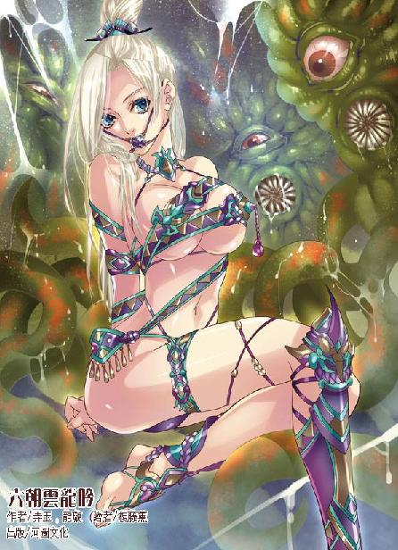
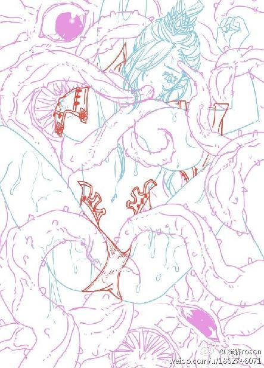

第43集·赤阳圣果
太泉古阵篇（2/7）
出版日期：2013-03-07
【本集内容简介】
众人为了躲避兽潮闯进山洞，找到殇侯当年采得“夜明珠”的建筑物。程宗扬大为兴奋，因为这地方就是熊谷！
在宝库内每进一层，众人便讶异一分，为数庞大的各种军械晃花了每个人的眼！岳帅藏于太泉熊谷最为珍贵的东西居然是……
赤阳圣果现世，双株被夺其一，程宗扬能夺得最后一颗治愈萧遥逸吗？或是陷入更危险的境地？
※ ※ ※ ※ ※

封面人物：虞白樱

插图：尹馥兰与淫兽（作废草图）
杂乱的脚步声打碎了隧道的宁静，昏暗的火光摇曳着，在四周投下巨大的影子。匆忙间，众人只在篝火旁捡了几根树枝作为火把，不时有人因为慌乱碰撞在一起，随即爆发出一阵大骂，甚至于拳脚相加。
程宗扬一手按着刀柄，一手拉着小紫，防止被人群冲散。眼前的隧道并不狭窄——事实上宽得连边都找不到，但所有人都拼命挤在一处，再宽的路也没用。能来到这里的人修为都不弱，但修为再高，没有纪律也就是一群乌合之众，如果换作星月湖大营，纵使只有一个班，也不至于这般狼狈。
一名大汉强行挤了过来，见到程宗扬在前面挡路，伸手扳住他的肩头，想把他推开。程宗扬也没客气，抬肘撞在那大汉肋下，将他撞到一边。
“直娘贼！敢挡我金枪刘的路！”那大汉稳住脚步，叫骂着擎出一杆金光闪闪的短枪，猛刺过来。
程宗扬眼疾手快，一把握住枪身。
“来得好！”
金枪刘沉腰坐马，发力回夺。忽然小紫怀中白影一动，雪雪张牙舞爪地探出小脑袋，朝金枪刘腕上咬了一口。
那大汉惨叫一声，金枪落地，他抱着手腕叫道：“这小子暗箭伤人！天地盟的兄弟们！干掉这小子！”
周围传来几声怒吼：“谁敢动我们天地盟的人！”
“小子别跑！”
站这儿等着挨打才是傻子，程宗扬拉着小紫，不言声地冲出人群，往黑暗里一钻。那些人摸黑过来，一时找不到目标，没头苍蝇般叫骂了一阵，悻悻离去。
程宗扬笑道：“算他倒霉，被小贱狗咬这一口，那家伙的金枪起码半年举不起来。”
雪雪不屑地翻了个白眼，小紫却没理会他的玩笑，她扬起脸，美目泛出异样的光彩。
程宗扬也抬头打量着周围的空间。这条隧道和太泉古阵其他建筑一样，规模大得惊人，火把微弱的光线根本照不到隧道顶部，从周围的回音判断，隧道的高度至少有五十米，宽度更是超出视野。与隧道的庞大规模相比，下面的人流就像一群渺小的蚂蚁。
自从进入太泉古阵，程宗扬就在猜测这座神秘的古阵究竟来自何处。乍然看来，太泉古阵与自己熟知的城市极其相似：停车场、汽车、道路、立交桥……一个现代都市该有的都有。但具体到细节，完全不是那么回事：体积庞大的车身，用紫外线作为可视光的仪表盘，未知的动力能源，还有那些陌生的文字——每一件都在提醒自己，这里并不是自己所熟知的现代城市。
最让程宗扬难以理解的，是太泉古阵与外界迥异的时间和空间。太泉古阵在六朝已经不知经历了多少岁月，但阵内的车辆、桥梁、建筑都和新的一样，没有任何被时间侵蚀的痕迹。
这里的时空不仅与外界完全独立，而且每一层都互不关联。一桥之隔，昼夜相别的情形屡见不鲜。这种诡异的时空差别，让程宗扬有种堕入电玩世界的荒唐感。他甚至怀疑，自己不会真是掉进某个电玩游戏里面了吧？如果是这样，那可实在太逊了。
除了诡异的时空，另一桩令程宗扬难以理解的，是太泉古阵充沛的能源，任何一个角落都灯火通明，悬在十几米高空的路灯照在空无一人的道路上，毫不在意地消耗着电力。即使这座城市用的是核能，程宗扬也不相信它的反应堆能工作几百年，况且维护的工人又在哪里？
相比于外界的灯火辉煌，这条隧道的黑暗就很例外了。不知道是有人像朱老头当初一样采掘墙壁上的“夜明珠”破坏了照明线路，还是别的缘故。
火把摇曳的光线渐渐远去，小紫的星眸在黑暗中却越发璀璨，她抱着雪雪，仰脸望着头顶黑沉沉的空间，忽然道：“上面有个奇怪的东西。”
程宗扬精神一振，“哪边？”
“就在上面。”
程宗扬用足目力，仍然没有看到任何光线，只好叹了口气，“什么东西？”
“一个很亮的符号。”小紫在他手心画了一个图案。
程宗扬握住拳头，“红色的吗？”
“紫色的。”
程宗扬往左右看了看，人群匆忙奔走，显然都和自己一样，没人意识到就在他们头顶上方，有一个紫外线的右转标示牌。
武二郎背着萧遥逸大步奔来，一边扯开喉咙嚷道：“程头儿，发什么傻呢？快跑啊！”
萧遥逸伏在武二背上道：“二爷！你先放我下来！你放心！我欠你的钱肯定还！我萧遥逸有一说一！绝对不会跑路赖账！”
武二郎手臂一紧，蛮横地说道：“少来！把欠二爷的钱还了，二爷立马放你下来！”
“哎哟……二啊，你勒死我了！”
武二牢牢抓住小狐狸，恶狠狠地威胁道：“小子！你要嫌背着不舒服，一会儿二爷把你夹胳肢窝里！”
“千万别！”萧遥逸只好妥协，“还是背着得了。”
徐君房一手拿着根手指粗的松枝，一手扶着朱老头，两人跌跌撞撞地过来，那模样活像瞎眼的黄鼠狼攥着个瘸腿的耗子。
“快走快走！要到里面才平安！”
“火把给我！”
程宗扬从徐君房手里接过松枝，朝头顶照去。松枝不时发出“噼噼啪啪”的爆响，火光下空无一物，没有任何痕迹能显示头顶的紫外线标记。往旁边看时，火把微弱的光亮只能照出周围十几步的范围，再远就被黑暗所吞噬。
人群乱纷纷地从旁奔过，那群来自塞外的胡人也冲进隧道。他们用兽皮包裹住坐骑的马蹄，以免马匹在坚硬的路面上受伤，奔驶时发出闷闷的响声。
凉州盟人多，反而落在后面，左彤芝飞掠过来，急急唤道：“赶快走！兽群快进来了！”
程宗扬道：“我们往右边去，左护法，你们呢？”
左彤芝讶然道：“为什么往右？”
程宗扬没办法解释这里有一个人类肉眼无法看到的标记，只好搪塞道：“所有人都聚在一起反而容易被兽群围攻，分散开才好逃生。”
左彤芝犹豫了一下，然后扬声道：“凉州盟的朋友！来这边！”
一群人应声停住脚步，朝这边聚来，大部分是凉州盟的，还有些是与同伴失散，跟着人多的地方走。
程宗扬顾不上解释，举起火把道：“跟我来！”
黑暗中分不出东南西北，没多久松枝烧到尽头，众人只能靠声音在黑暗中摸索，根本不知道自己身在何处。程宗扬倒是越走越放心，那些人眼无法察觉的紫外线标记并不止一处，而是每隔一段距离就有一个，就像一座座看不到的灯塔，引领着众人走进黑暗深处。
直行，左转，直行……右转……
众人在黑暗中摸索着前行，始终没有看到光线，但也没有碰到墙壁。这里的空间似乎比想象的还要大。
“有一个梯形。”小紫在程宗扬掌心画出图案。
程宗扬道：“是台阶。”
“呯”的一声，有人撞到硬物，接着铁中宝大喝道：“有敌！”
铁马堂的副堂主拔刀在手，“叮叮铛铛”与来敌连过数招。黑暗中，只能听见铁中宝一手快刀使得密不透风，一边大叫道：“好棍法！大伙儿小心！这厮使的蟠龙长棍！哎呀！这点子扎手得紧！”
听着旁边传来的金铁交鸣声，众人都把心提到嗓子眼儿里。铁中宝大呼不绝，似乎已经受了伤，仍然血战不退，让人敬佩不已。只是四周一团漆黑，谁也不知道敌人来自何处，更不知道有多少敌人。
“噗”的一声，眼前猛然一亮，众人纷纷后退，急切地握紧兵刃。
一点火焰燃烧起来，映出一张年轻的面孔。程宗扬吹亮火褶，扫了一眼，没好气地说道：“铁爷歇歇吧。那是楼梯扶手。”
众人一片哑然，火褶微弱的光线下，能看到一条银亮的不锈钢扶手远远朝下方伸去，长得仿佛没有尽头。
铁中宝气喘吁吁，手里的快刀砍出七八个缺口，旁边的栏杆却没有留下丝毫印迹，这会儿瞠目结舌地看着那道不锈钢栏杆，连找个地缝钻进去都忘了。
程宗扬望着下方黑沉沉的地下通道，吩咐道：“大伙儿扶着栏杆，免得走错了路。”说着当先踏入。
左彤芝犹豫了一下，朝武二看去。武二却对那条不锈钢扶手来了兴趣，他一手紧紧攥着萧遥逸这个欠了自己赌债的小狐狸，一手屈指朝栏杆上敲了敲，然后趴在上面听了听声音。
程宗扬走了几级台阶，然后把火褶扣好，塞进袖内。这里的台阶比平常人使用的高了一倍，走起来有些不适应。好在旁边有扶手，只要小心些不至于摔倒。
台阶笔直朝地下伸去，众人一路向下，感觉像是深入大地腹内，未知的压迫感使每个人心里都沉甸甸的。
一顿饭时间后，台阶终于走到尽头，与上面一样，这里也没有电力，周围一片黑暗。当双脚踏到平地，程宗扬提气大喝一声，片刻后四周传来回音，似乎正置身于一个庞大而空旷的大厅中。
程宗扬贴在小紫耳边道：“有东西吗？”
“有。”小紫停顿了一下，“有八个。”
程宗扬一阵头大，竟然出现了八个图案？
“每一个图案都不一样。一条长羽毛的蛇、一只狼头、一朵花、一只蜜蜂、一只熊……”
忽然有人叫道：“地上有东西！”
两三只火褶同时亮起，接着响起一片倒抽凉气的声音。脚下是平整到极点的大理石地板，打磨光滑的地面像镜子一样反射着火褶的光焰。然而此时光洁的地上布满了各种各样的印痕，有用枪锋刺出的箭头，有用刀尖刻出的划痕，有一些难以索解的折线，甚至还有完整的掌印和足印。
众人议论纷纷，“这是什么鬼画符？”
“旁边还有！”
“诸位不必担心。”纷乱中，徐君房挺身而出，抚须说道：“若徐某所见不差，此地应该是太泉古阵的雁过石。”
有人道：“什么雁过石？难道这地下还有大雁？”
徐君房道：“所谓雁过留痕，上面的印痕都是进入太泉古阵的寻宝人所留，曾有人沿着前人的标记寻到宝藏，所获至多。传说雁过石藏在太泉古阵深处，非大有缘者难得一见。”
听到徐君房这番话，众人顿时被激起贪欲，都在猜测这些印痕中隐藏了什么样的宝物线索。
萧遥逸蹲下来摸着地上的印痕，俊朗的面孔猛然涨红，眼中迸出一缕激动的神采。
左彤芝开口道：“程少主，这里已经够安全啦，咱们在此休息一时，等兽群散了便回去。”
有人附和道：“兽群顶多一两个时辰就散，这地方黑灯瞎火，不好多待。”
更多人却跃跃欲试，说道：“左护法，都已经摸到宝山边上了，怎么能不进去看看？说不定能捡到什么宝物呢。”
有老成持重的说道：“此地不可久留，万一迷了路，困死在这个地下玄宫，那可冤枉。”
众人道：“前有车后有辙，咱们也照葫芦画瓢，走几步就刻个记号，万一迷路，就沿着记号回来。”
争论中，程宗扬低声问小紫，“你说有只熊？”
“在你左手边的位置。”小紫道：“第三个标示牌。”
听到“熊”字，程宗扬第一想起的便是刘娥的那句“熊谷”。他摸了摸背包，岳鸟人留下的钥匙还在包里，难道岳鸟人留下的物品就在里面？
程宗扬沉吟半晌，对徐君房道：“你说这里是第十层的入口？”
徐君房点头道：“没错，就这个山洞。”
“里面有什么？”
徐君房道：“那我可说不准了。”
程宗扬道：“你说曾经和鬼谷先生在阵中遇到过赤阳圣果？是在什么地方遇到的？”
徐君房老实道：“那可有年头了，如果到了地方，我也许还能想起来，这会儿让我说，可说不上来。”
身后忽然“呯”的一声巨响，像是有什么重物砸在金属上。突如其来的声音让人惊出一身冷汗，不少人都立刻拔出兵刃，戒备地望着声音传来处。
那声巨响过后，周围再没有任何动静，大伙儿暗暗松了口气，多多少少都有了打退堂鼓的心思。
大厅位于地下深处，虽然光线全无，但空气清新，没有丝毫浊意，显然通风良好。
火褶陆续熄灭，接着一个声音响起：“凉州盟的众位好汉！在下姓程，方才在外面已经见过。”
程宗扬提声道：“大伙儿为了躲避兽群到了此地，能遇到这雁过石，也算有缘。不过里面究竟有没有宝物，谁都说不准，风险倒是占了九成。左右已经到了此地，程某一行准备进去看看。诸位若是不愿去的，便留在此地。想进去的，便结伴而行。左护法，你看如何？”
左彤芝犹豫片刻，“我们凉州盟还有人马在外面，方才听徐先生说，这洞窟原是极深的，只怕在阵中失散。”
铁中宝赶紧道：“没事儿！让刘三带几位兄弟在这里守着，咱们一起随程少主进去看看！”
左彤芝只好道：“如此也好。不过此地标记虽多，却无人认得，不知程少主准备往哪里去？”
程宗扬还未开口，萧遥逸便道：“这边。”
他缓慢却坚定地抬起手，指的正是那个印着熊图腾的方向。
※ ※ ※ ※ ※
在徐君房的安排下，程宗扬等人带的物品十分齐全，可这会儿全扔在车内，都两手空空。好在凉州盟人多势众，当下一名使棍的好手拿出自己的齐眉棍，折成两段，接着有人撕下衣服，浸上油缠在上面做成火把，用来照明。
程宗扬举起火把，当仁不让地走在最前面，左边小紫，右边萧遥逸，徐君房和朱老头跟在后面，武二那厮却不知道溜到什么地方去了。
萧遥逸紧盯着前方乌黑的空间，连身体都因为紧张而显得有些僵硬，神情间却带着一丝亢奋。
程宗扬还记得他一向怕黑，这会儿居然没有吓得尿裤子，也算是十分有勇气了。
“怎么样？能撑住吗？”
萧遥逸低声道：“那些印痕里，有一个是岳帅留下的。”
程宗扬心头微震，“你确定？”
萧遥逸道：“岳帅的画押我从小就看惯的，绝不会认错。”
“侯二哥他们不是来过太泉古阵吗？怎么没听他们提过这事？”
萧遥逸道：“他们为了找岳帅的下落进过一次，但没有找到任何线索。”他吸了口气，尽量保持语调的平静，“如果不是遇见雁过石，也许我也错过了。”
“哎呀！”
后面猛然传来一声大叫，萧遥逸若无其事地停住脚步，但程宗扬清楚看到一股冷汗从他脸侧流淌下来。
“小心！别摔下去！”
“这是什么？”有人叫道：“这扶手怎么倒下了？”
“那是铁轨。”程宗扬道：“用来跑车的。”
“跑马车的？怪了，难道马车还能在两条铁棍上跑？”
程宗扬不知道该怎么给他们解释地铁，索性不提，只道：“咱们下去走！”
众人有些好奇地下到轨道中，铁中宝走了两步，骂骂咧咧道：“这石头铺得太坑人了！一次走一根太窄，跟个娘儿们似的迈不开步子。一次走两根太宽，扯得胯子疼！”
徐君房不放心地跺了跺铁轨，低声道：“程公子，这么走对吗？我怎么觉得有些古怪呢？”
“放心吧。这是条直路，比从上面走要快得多。”
徐君房嘀咕道：“真的假的？你头一次来，怎么连这里有捷径都知道呢？”
程宗扬笑道：“要不说这是缘份呢？”
沿着台阶走进大厅时，程宗扬已经有所预料，此时终于可以确定，刚才众人所处的大厅，正是城市地铁中心，这一条是通往“熊谷”的隧道。程宗扬不无遗憾地想道：可惜地铁早已停运，要不然再搭乘一段地铁，那才快捷省事。
火把并没有支撑太久，半个时辰之后，两支火把先后熄灭，周围又恢复了一片黑暗。虽然沿着轨道不会迷路，但队伍不可避免地逐渐拉开。程宗扬只好停下来，收拢队伍休息片刻，等后面的人尽快追上来。
萧遥逸伤势未愈，走到这会儿浑身都是虚汗，还在咬牙硬撑。他们兄弟寻找了十几年，乍然见到岳鹏举留下的痕迹，能撑到现在也不奇怪。奇怪的是死丫头却对这个消息没有半点反应，就像没听见似的。
趁着休息的时候，程宗扬道：“丫头，你猜他是不是真在这里？”
“谁啊？”
“当然是你……那个……那个不争气的家伙！”
小紫翘起唇角，慢悠悠道：“如果真在这里就好啦——可惜不是。”
程宗扬不禁替岳鸟人庆幸，看死丫头的表情，那鸟人如果真在这里，八成要被死丫头抽筋剥皮，填上草当靶子打。
“你这么肯定？”
“一个人走投无路，在太泉古阵躲上十天半月还有可能。要在这里待十几年，骨头都可以打鼓了。除非……”小紫停顿了一下，目光闪闪地说道：“……有哪个傻瓜躲在苍澜镇上。”
程宗扬想了一会儿，突然没头没脑地对萧遥逸道：“岳帅吃鸡吗？”
萧遥逸正闭眼养神，闻言倒是一愣，“吃啊。”
程宗扬扬声道：“老徐！”
徐君房的声音传来：“这儿呢！”
程宗扬摸黑过去，“老徐，问你点儿事。”
徐君房痛快地说道：“尽管问！反正闲着也是闲着。”
“你在镇上住了不少年头，有没有什么怪事？”
徐君房寻思了一下，“没有啊。挺正常的。”
程宗扬暗道自己问了句废话，徐君房就住在镇上，再古怪的事也早已习以为常了。他换了个问题，“近十几年镇上有没有什么来历不明的人物？”
徐君房笑道：“这你可问着了。苍澜镇上的人有一个算一个，全是来历不明的。就比方我吧，我就不知道自己是怎么到苍澜的，反正自打我懂事起，就跟着先生住在镇子上。”
程宗扬道：“你说镇上的粮食都是从外面贩运进来的，对吧？”
“没错。”
“镇上常住有一千多人？”
“是啊。”
“口粮每人每天两斤，减半算的话，一天也要一千多斤，差不多是十石，一个月要三百石——想把三百石粮运进来，至少要一百五十头走骡。就是三十头走骡的商队，每个月也要五趟——你在镇上瞧着，有这么多吗？”
徐君房一肚子苦水，“每天有半斤粮就不错了。外面的商队一个月也来不了两趟。好在山上有果子，水里有鱼，还能对付。”
“如果想吃鸡怎么办？”
“别说鸡了，鸡蛋我都没见过。”徐君房悻悻道：“那些好东西，也就外姓人才能吃上。”
“哪些外姓人？”
徐君房撇了撇嘴，“栖凤院的东家，水果行的会首。”
“栖凤院的东家是谁？”
徐君房干脆地说道：“不知道。那些外姓人鬼鬼祟祟的，谁知道呢。”
程宗扬叹了口气，抚住额角，拧眉思索。江山易改，秉性难移，像岳鸟人那种享受惯的，如果让他在鸟不生蛋的地方待十几年，还不如杀了他痛快些。从他生活习惯入手，也许会有意想不到的收获——看来从太泉古阵出去，自己该查查从外面运进苍澜的鸡都被谁吃了。
不过最大的可能，所谓岳鸟人在苍澜出现的消息，仅仅只是讹传。毕竟这个消息出现得太过蹊跷，而且是从远离太泉古阵的北三朝传播开来，怎么看都透着一股阴谋的气息。
黑暗中，一个柔软的身体忽然撞在身上，对方一声低叫，却是个女子。
程宗扬连忙道：“是我！”
对方松了口气，“原来是程公子，唐突勿怪。”
程宗扬笑道：“这地方黑得要命，也怪不得左护法。”
左彤芝却道：“公子年纪轻轻，修为却是不凡，呼吸声弱不可闻，连奴家也没听到呢。”
程宗扬打了个哈哈，“我这点三脚猫功夫，让左护法见笑了。”说着他站起身，扬声道：“凉州盟的朋友都到齐了吗？咱们接着赶路！要不了半个时辰，就到地方了！”
众人欢呼一声，振作精神，沿着轨道继续前行。
程宗扬高估了众人行进的速度，也低估了隧道的长度。隧道内的温度越来越低，足足一个时辰之后，才看到一缕金黄的光线出现在隧道尽头。众人顿时一阵欢呼，当即就有人抢先跃过去，看看是什么宝物发出的金光。
“水晶！好大的水晶！”有人震惊地叫道。
“土狗！”铁中宝撇了撇嘴，“这是玻璃！每年走凉州道从泰西贩来的，起码有几十驼。啧啧！这么大的玻璃倒是少见。”
出口是一个设在地面上的地铁站，整座建筑全部采用是透明度极高的玻璃建成，宛如一座水晶宫。
水晶宫外，夕阳的余晖从两道山梁之间射入，山谷内长满巨松，上面覆盖着皑皑白雪，一片寒冬景象。
众人面面相觑，外面正值盛夏，谁能想到会在阵内遇上寒冬腊月天气？待在地铁站内还不觉得寒冷，但隔着玻璃看看外面的雪景，就够人打冷战的。
程宗扬一阵失望，关于赤阳圣果的信息，自己得到的不过是只鳞片爪，但那些杂乱的信息不约而同都提到赤阳圣果生长在至阳极热之地。眼前这大雪封山的景象，与赤阳圣果生长的地域天差地远。
铁中宝头一个站出来，他跃过一道铁栅栏，蹿到站外，捧起一把雪搓了搓，叫道：“真是雪啊！”说着朝脸上擦去，边擦边道：“痛快！痛快！”
徐君房伸长脖子道：“雪是这样的？这就是雪？”
众人一阵哄笑，“怎么有人连雪都没见过？”
徐君房道：“苍澜最冷的时候穿两件单衣也就对付过去了，从来没下过雪。我听先生说过，这还是头一回见。”他搓着手道：“铁堂主，这雪凉不凉？”
“这点儿冷算什么？我老铁在凉州，三九天照洗凉水澡！这天气离滴水成冰的时候差得远呢！”
程宗扬望着站外一棵巨松，对徐君房道：“老徐，这地方你没来过？”
徐君房头摇得拨浪鼓似的，“没有。”
程宗扬扭头看着一边裹紧羊皮袍一边乐得鼻涕泡都出来的朱老头道：“死老头，你来过吧？”
“可不是嘛。”朱老头乐呵呵道：“这都好几十年了。”
“我说你怎么把羊皮袍翻出来穿上呢？”程宗扬道：“好你个死老头，也不提醒我们一声。”
朱老头叫起屈来，“谁知道几十年雪都没化呢？话说回来，你有钱给咱们备冬衣吗？就算你有钱，也得有地儿买啊。”
程宗扬一边翻出多余的衣物给小紫披上，一边压低声音道：“死老头，都到这里了，你也别藏着掖着了，万一有个闪失，有你哭的时候。”
朱老头堆起猥琐的笑容，嘿嘿笑道：“瞧你说的。哪儿能呢？我不走到这儿才想起来——那颗夜明珠，就是在这儿采的。”
“还装！”
朱老头一脸委屈，“我那次走了六天才到，哪儿能想到你这回不到半天就摸到地方了呢？”
地方本来就陌生，再加上双方走的不是一条路，也难怪朱老头弄不清楚。这里虽然不大可能找到赤阳圣果，但既然来了，也不能白来，程宗扬道：“在哪儿摘的？”
朱老头估摸了一下，“往右，过了山口就是。”
外面忽然有人叫道：“脚印！这边有脚印！”
※ ※ ※ ※ ※
雪地上印着几行浅浅的脚印，凉州盟都是北疆豪客，对于雪上踪迹再熟悉不过，一眼看去，就能推断出对方一共有四个人，那些足迹全是前半个脚掌着地，两个略深一些，另外两个只有浅浅一点印迹。
铁中宝蹲下来看了片刻，赞道：“好轻功。”
左彤芝脸色出奇的凝重，低声道：“什么时候留下的？”
铁中宝摇头道：“上面没有浮雪，应该是雪停的时候才路过。咱们刚来，不知道雪什么时候停的，这倒瞧不出来。”
左彤芝望着周围，吩咐道：“大家小心些，这地方……有些古怪……”
程宗扬突然觉得耳边清静得有点过分，好像少了某个大牲口的聒噪，他回头一看，愕然道：“武二呢？”
萧遥逸、朱老头、徐君房一起摇头，“不知道。”
“干！不会把那家伙弄丢了吧？”
左彤芝道：“你说武二爷？在雁过石我还见过他，一晃就没影儿了。”
小紫笑道：“别担心，他说找件东西给苏荔姐姐当礼物，一会儿就来。”
“黑灯瞎火他找什么礼物呢？不会是想掘两块地砖吧？”
程宗扬看了看前面的雪景，天气虽冷，但以众人的修为，尽可以抵挡，只是徐君房耐不得寒，抱着肩一个劲儿地打哆嗦。
“先过了山口，找个地方生火！”
众人轰然应诺，迈步朝山口奔去。
山后是一片一望无际的雪原，无数巨大的松树拔地而起，枝叶上覆盖着厚厚的白雪。每一株松树下都有一座建筑，高度与平常住房相似，但门前铺着一条向下的台阶，仿佛入口是在地下。
铁中宝跃下台阶，只见在上面看起来平常的房门居然有自己两三个高，几乎赶上城门的规模。房门不知是用什么材料制成，色泽棕黑，表面平整得没有丝毫划痕。他伸手欲推，却被徐君房叫住，“不可！”
铁中宝连忙停手，程宗扬道：“怎么了？”
徐君房告诫道：“太泉古阵有谚：遇桥慎行，遇室慎入。这里房门紧闭，一旦触动，说不定会惊动守阵力士，若是那边，倒可一入。”
顺着徐君房的手指看去，远处一座圆形的建筑，房门大开着，门前堆着半人高的积雪。
※ ※ ※ ※ ※
萧遥逸一脸扫兴地收回脑袋，“空的，什么东西都没有。”
程宗扬打量着这座建筑，与周围的建筑不同，这座建筑完全建在地表，中间一个直径超过十米的平台，周围隔成一个个房间，呈环形排列。房间里只有一个半人高的水泥台，除此之外，一无所有。
与外面的桥梁、建筑相比，这座建筑显得过于粗大笨重，到处是粗糙的水泥构件，看不到任何装饰的痕迹。整座建筑头一眼看去，像是剧场，但周围全是房间，没有设置席位的地方。如果说是宾馆，又实在太过简陋。
程宗扬看了半晌也没看出来这建筑是做什么用的，此时眼看天已经快黑了，一旦下雪，这里倒是遮风挡雪的好地方。
程宗扬与左彤芝商量了一下，决定挑出三组人手，每组五人，往周围寻宝，剩下的留在此地接应。
程宗扬道：“我们准备往南边去看看，最多一个时辰就回来。”
左彤芝笑道：“真巧，我也要往南边。”
程宗扬往南，是因为朱老头偷灯泡的地方是在南边，左彤芝却是盯上了那行足印。她坦然道：“太泉古阵危险重重，不摸清那些人的底细，奴家心里总觉得不踏实。”
程宗扬道：“一起走也无妨，不过我们已经五个人，左护法再带几个人，恐怕太多了些。”
“何必带人？”左彤芝道：“我自己与你们一道去便是了。”说着她眼波轻转，有意无意地抛了个媚眼，轻笑道：“以程公子的身手，想必能保护奴家的周全。”
程宗扬打了个哈哈，“那可不好说。这地方古怪得很，我们这几个跛脚鸭都自身难保呢。”
“阿嚏！”徐君房打了个喷嚏，摇手道：“我、我是去不成了……在这儿等你们便是。”
凉州盟诸人久经酷寒，又有修为打底，对外面的大雪并不在意，徐君房却是自小生在苍澜，刚才这段路差点冻得连小命都丢掉。这会儿虽然把能穿的衣物都穿在身上，他还是冻得脸青唇白，抱着肩不住发抖，等凉州盟的人捡来松枝，生起篝火，才缓过劲来，无论如何也不肯再出去挨冻。
左彤芝眼波流转，轻笑道：“算上奴家，正好五人。”
无论朱老头的身份还是岳鸟人的遗物，都是不好公开的隐秘，因此程宗扬并不想和生人同行，但左彤芝一口应诺孤身而来，倒不好再说什么推辞的话。
萧遥逸豪气干云地说道：“姐姐放心！有我在，肯定不会让姐姐吃亏！”
左彤芝笑道：“有弟弟这话，奴家便放心了。程公子，咱们这便走吧。”
朱老头试探着道：“要不……我也歇歇？”
“少废话！这点儿雪冻不死你！”
众人离开圆厅，不多时便看到那行足印在雪地上蜿蜒向南。程宗扬也在奇怪是谁先到了熊谷，沿着足印一路追去。
走出两里多路，雪下松软的土地变得坚硬起来。程宗扬拨开积雪，果然已经离开山地，眼前是一条铺过沥青的公路。
忽然“呯”的一声，远处传来玻璃破碎的声音，众人对视一眼，不约而同地加快速度。
绕过一排巨松，只见一幢四四方方的建筑笔直矗立在雪原中，却是一幢巨大的楼宇，大楼前的雪地一片狼藉，两名穿着僧衣的和尚手持方便铲，正与一名守阵力士斗得正紧。
两名和尚身手矫健，招术大开大阖，气度雄浑。守阵力士只有一个，形制与程宗扬在停车场见过的有些相似，高度都在两米以上，体格庞大。当初过桥时程宗扬只远远瞥了一眼，这会儿才首次看到机械守卫出手，和那两名僧人相比，它根本没有招术，而是依靠迅捷的判断能力，做出最合理的反应。动作简单直接，目的性极强，反而更难应付。
众人赶到时，打斗已临近尾声，两名僧人落在下风，边战边退，那名守阵力士一板一眼地向前逼去，接着肘下“哗啦”一声，掉出一副明晃晃的手铐，似乎要将两名僧人当场捉拿归案。
一名僧人忽然往下一蹲，方便铲横扫而出，打在守阵力士腿部，坚硬的合金外壳溅出一缕火花。接着另一名僧人跃起身来，方便铲往前暴挺，弯月状的铲牙锁住守阵力士的喉咙，深深切了进去。
机械警察合金制成的外壳破碎开来，露出一丛红色的电线，接着电线被月牙切断，猛然迸出一团火光。那名僧人如受雷殛，身体猛地向后弹去，方便铲脱手飞出，双手已经变得焦黑。
另一名僧人大吼一声，将守阵力士摇摇欲坠的头颅击飞，然后扑过去扶起同伴，叫道：“师兄！”
受伤的僧人身体僵硬，口鼻呼吸断绝，空气中弥漫着皮肉焦糊的味道。
“师兄！师兄！”那和尚叫了几声，不见回应，不由抱着师兄的尸体放声大哭，一时间肝肠寸断，闻者落泪。
两名僧人情同手足，生离死别的情形催人泪下，程宗扬都觉得鼻子有点儿发酸，小紫一双美目却闪闪发亮，饶有兴致地看着那具机械守卫。
朱老头怂恿道：“把它剥开，肚子里有宝贝呢。”
“别碰！”程宗扬一把扯住小紫，“小心触电。”
朱老头道：“啥电啊？”
程宗扬没好气地说道：“连高压包你都捡，怎么就没打死你呢？”
左彤芝凝视着那两名僧人，片刻后走过去，双手合什施了一礼，“两位虽是联手，但能击败守阵力士，实属难得，不知两位出自十方丛林哪处下院？”
那僧人垂泪道：“小僧惠远，乃佛光寺弟子，五日前与几位师兄同至太泉古阵，不意遭此大难。”
朱老头拢着手，一脸兴灾乐祸地说道：“两个小光头不学好，砸人家玻璃，想偷东西，这不是报应来了。”
惠远怒道：“小僧与师兄在阵中迷路多日，谨守戒律，一芥不敢妄取。方才闻声赶来，却遇上守阵力士，不由分说便欲锁拿小僧，因此才动起手来。”
朱老头吹胡子瞪眼，老气横秋地说道：“不是你们干的，那玻璃好端端的会碎？小和尚，想骗我老人家，再好好学几年吧。”
惠远被他堵得说不出话来，光秃秃的额角绷出青筋。
萧遥逸从袖子里摸出扇子，一边悠闲地扇着风，一边仰脸看着楼上，说道：“玻璃是从里面碎的。”
众人纷纷抬起头，只见楼上一扇窗户的玻璃被人击碎，露出一个大洞。玻璃的碎片散落在雪地上，上面依稀还沾着血迹。
左彤芝沾了点血迹，在指间一捻，然后嗅了嗅，“人血。”
惠远一抹眼泪，便要过去推门，程宗扬扯住他，“小和尚，看清楚些，门前有脚印吗？”
那楼的一层是一整排落地玻璃，只不过里面挂着帘子，看不清内部的设置。门前的雪地众人却是看得清清楚楚，厚厚的白雪上，除了两名僧人的足印，再没有其他痕迹。
左彤芝道：“既然没人进门，楼里为何会有人打碎玻璃？”
萧遥逸合起折扇往掌心一敲，“后门！”
惠远一听，拖起方便铲就往楼后赶去。萧遥逸向程宗扬使了个眼色，叫道：“我和你一起去！”
左彤芝应声道：“我也去！”
三人连袂走远，剩下程宗扬、朱老头、小紫和地上一具守阵力士的残骸。
程宗扬道：“老头，你的夜明珠在哪儿摘的？”
朱老头努了努嘴，“就在这上面。”
程宗扬抬头看着楼顶，“你不会是飞上去的吧？”
朱老头道：“可不是嘛。俺使尽浑身解数，一口气飞到楼顶，才找到入口，结果刚进去就被守阵力士围住，只来得及摘了颗夜明珠就逃了出来。”
“里面有守阵力士？”
“从外面来的。”朱老头神情间难得露出一丝凝重，沉声道：“此地房舍多半都设有禁制，而且不止一重。只要碰触门禁，就会惊动守阵力士的耳目。”
程宗扬想了一会儿，说道：“死丫头，帮我看个东西。”
小紫正远远审视着那具机械守卫，头也不抬地说道：“看什么？”
“墙上有没有红线？”
小紫抬头看了一眼，“没有啊。”
“怎么会没有？你仔细点，别敷衍我。”
小紫眼中泛出奇异的光泽，片刻后回头看了程宗扬一眼，笑道：“让你猜对了，有三根极细的红线。程头儿，你怎么知道的？”
“红外线警报器嘛。干！怎么看不到发射源呢？”
小紫摊开手，“我怎么知道？”
程宗扬拍着额角，“玻璃不会无缘无故破裂，大门进不去，楼外有红外线报警……”他琢磨半晌，忽然间恍然大悟，“我知道了！”
萧遥逸、左彤芝和惠远先后掠来，“没找到门户。”
程宗扬胸有成竹地说道：“这边！”
程宗扬往公路奔去，片刻后在路旁找到一片微微凹陷的积雪，他伸手一拨，下面露出一块黑沉沉的铁板。
“呯”的一声，数百斤重的铁盖被掀到一边，下面是一个深不见底的洞口。程宗扬点燃松枝，伸进去试了试空气的含氧量，然后垂下绳索，当先进入洞内。
洞穴比自己以前见过的深了许多，用了将近五丈的绳索才到洞底，程宗扬估算了一下方位，然后举着松枝往旁边一个洞口走去。
“这洞穴好生古怪，”萧遥逸摸了摸洞壁，“看起来和我们江州的水泥很像啊。圣人兄，这是什么洞？”
“下水道。”
“骗鬼啊！哪儿有这么大的下水道！”
“这还是小的，你到主城区，几丈高的下水道说不定都有。”
萧遥逸抽了口凉气，“单是这条下水道，便要花费多少人力物力？”
“一条下水道算什么？这座太泉古阵当年兴盛的时候，生产能力是你想象不到的。”程宗扬停顿了一下，“连我也想不出来。”
眼前的下水道极其宽敞，比起一般的隧道也不遑多让。不时有融化的雪水从头顶滴落，发出“叮叮咚咚”的水声。左彤芝、惠远都一脸的怀疑，但当走到通道尽头，看到嵌在壁上的铁制长梯时，众人的怀疑都变成了惊讶。
程宗扬摸了摸铁梯，回头道：“看来已经有人抢先了啊。各位，要不要上去打个照面？”
萧遥逸道：“我先来。”
话音未落，惠远和尚便跃起身，猿猴般攀援而上。
钻出洞口，已经是大厦内部，松枝的火光映出潮湿的四壁，还有几个白色的物体。惠远伸头去看，低声道：“这是什么东西？倒和瓷碗差不多。”
瞧着他的光头伸在里面拧眉琢磨，程宗扬忍不住笑了起来，恶作剧地说道：“那是便池，撒尿用的。”
惠远赶紧退到一边，合什道：“阿弥陀佛，施主切莫打诳语。”
“你不信就算了。喂，小和尚，我们是来寻宝的，你跟来干嘛？”
“敝师兄因故惨死，小僧自然要一究根底，好向师门禀报。”
“你们出家人，怎么也来太泉古阵凑热闹呢？”
惠远道：“不敢欺瞒施主，敝寺月前接到消息，说有一个大魔头要在太泉古阵出世，敝寺便派了十几位师伯师兄，前来察看。不成想在阵内屡遭凶险，一来二去便与众人失散。如今师兄也被守阵力士所杀，只余小僧一人。”
程宗扬与萧遥逸对视一眼，然后道：“那个大魔头，是什么来历？”
“这个……师伯却未曾说过。”
又是岳鸟人的仇家，他们早来了几天，结果到现在还没能出去。这鸟人死了还害人不浅。
惠远道：“施主既然能来此地，不知走了几日？离出口还有多远？”
朱老头吹着胡子道：“哪里要几日？我们今日刚到！从这儿走，要不了半日就能出去。”
左彤芝道：“老爷子莫诳人家和尚。我们凉州盟运气好，从古阵进来，就在第二层的入口处，比别人省了一两日的路程。若是出去，只怕不易。程公子，你们来得倒快。”
程宗扬打了个哈哈，还没开口，萧遥逸便笑嘻嘻攀住他的肩膀，“要不说是圣人兄呢？生而知之，给咱们带了条好路。”
程宗扬与萧遥逸交往已久，只看他目光闪动，便知道他打的什么主意，微微摇了摇头。
萧遥逸苦笑一声，松开扇柄。
这小和尚虽然是来找岳帅麻烦的，但对双方的恩怨一无所知，这么杀了他，未免刻毒了些。
惠远浑然不知自己的小命已经被人掂量了几遍，他提起方便铲，“小僧在前开路。”
萧遥逸最后一点杀意也荡然无存，牢骚道：“这和尚也太老实了，居然都不问问咱们的底细！”
惠远愕然道：“你们不是凉州盟的吗？”
萧遥逸泄了气，“就算是吧。佛爷，你先请。”
小紫招了招手，萧遥逸立刻凑过去，两人咬着耳朵说了片刻，小狐狸一副心领神会的表情点了点头。
程宗扬道：“你们嘀咕什么呢？”
萧遥逸道：“我出去办点儿事，就不陪你们进去了。”
“哎，这死狐狸，怎么跑这么快？”
小紫笑吟吟道：“不用管他。程头儿，先出去看看这是什么地方？”
这座巨大的卫生间让程宗扬也大开眼界，坐便器足有半个浴盆那么大，而且是加厚的，真不知道是供什么样的庞然大物在上面方便——程宗扬也不想知道。
从卫生间出来，外面是一道楼梯，上下都看不到尽头。程宗扬发觉这座大厦和外面建筑一样，都是一半建在地下，从建筑物的结构判断，恐怕地下的规模更加庞大，不知道是因为习俗，还是出于现实的考虑。
众人不约而同地选择了上行，毕竟上面的建筑露出地表，万一遇到危险，还能跳窗跑路。
走过两层楼梯之后，眼前的光线变得明亮起来。夕阳最后一点余辉透过落地窗的纱帘，照在宽阔的大厅内。不出所料，这里的东西也差不多被人搬空了，只剩下几张足有卧床大小的沙发，静默地沐浴在阳光下。
程宗扬道：“这是一间酒店。”
朱老头立刻来了精神，“有酒？我老人家这一路可累坏了，先来口酒润润嗓子。”
程宗扬没好气地说道：“没酒。这地方是住宿的。”
朱老头大失所望，“住人的叫啥酒店啊。”
“这边是客房。”程宗扬指着走廊里一排房间道：“既然已经有人进来过，估计能搬的都搬得差不多了。”
左彤芝道：“弄碎玻璃的，应该是这一间了。”
惠远伸手一推，门却是锁着的。他举起方便铲正要去劈，却见程宗扬握着把手，轻轻一拧，紧闭的房门悄无声息地打开。
一股寒风从房中涌出，众人都打了个冷战。
房间无论高度还是宽度，都比平常人住的大了一倍，房内摆着一张大床，被褥零乱不堪，上面似乎还沾着血迹。
惠远握着方便铲慢慢走近，忽然表情一呆，接着脸上像火烧一样涨得通红。
大床内侧的地上伏着一个女子，她衣衫破碎，大半肌肤裸露在外，一条小腿蜷屈着，腿后有一个鲜血淋漓的伤口，似乎是被玻璃划伤。
惠远闭上眼不敢去看，忽然又觉得不妥，连忙扯了被褥掩在那女子身上，然后蹲下身，小心道：“女施……”
话音未落，那女子猛然翻身，手中寒光一闪，一枚细长的利器深深刺进惠远胸口。惠远闷哼一声，捂着胸口踉跄退后，指间涌出的鲜血瞬时便将僧衣染得血红。
左彤芝翠袖舒展，臂上的彩带飞出，灵蛇般缠住那女子的手腕。那女子挽住彩带，另一只手朝左彤芝腹下刺去，一边叫道：“素——”说着喉中溅出一串血沫。
左彤芝见她出手狠辣，也不敢怠慢，右手往腰间一抹，长剑出鞘，一招霞染千山，挡住她手中的利刃，顺势向前递出。
这一招以攻代守，仍是守势为主，出招并不十分凌厉，谁知剑刃相交，那女子手中的利刃应剑破碎，竟然没能阻挡剑势分毫，就被长剑透体而过。
那女子手中的利刃零碎掉落，却是一块狭长的玻璃。左彤芝愕然间，头顶一声狞笑，接着一条人影蝙蝠般滑落。
左彤芝急忙抬头，只见九柄雪亮的尖刀凌空而至，齐唰唰朝自己刺来。左彤芝所在的丹霞宗也是凉州一霸，她与如今的宗主系出同门，早已独当一面，论修为也是五级巅峰，虽然猝然遇敌，却临危不乱，当即旋身退步，抬剑去挡，谁知那九柄尖刀突然一旋，将她的长剑拧得脱手飞出。
左彤芝展开身法，流霞般闪身避开，接着臂下一阵剧痛，一柄带钩的短枪毒蛇般探出，从她袖下刺过，只差毫厘，就废了她的手臂。
“退开！”
暴喝声中，一柄钢刀犹如跃出的猛虎扑上刀丛，将那大汉撞得退后半步。
程宗扬双刀在手，双臂雁翅般张开，将左彤芝和小紫护在身后。左彤芝惊魂甫定，这时才看出从房顶跃下的是一名黑大汉，他一手提着短枪，另一只手拿的却是一面布满利刃的刀盾。
那大汉满面胡须，看着颇具豪气，眼神却有种异样的阴毒，带着些许疯狂的意味。
程宗扬沉声道：“阁下是什么人？”
大汉哈哈大笑，笑声中却殊无喜意，只有刺骨的寒气，“死人！老子是阎王爷都不敢收的死人！”
说话间，那大汉枪盾并出，狂风暴雨般猛攻过来。
程宗扬刚交两招，就知道这回撞上硬茬了。论修为，那大汉比自己也高不了太多，比起招数的精熟，却是天差地远，尤其他左手的刀盾和右手短枪，都不是凡品，放在外面至少都是千贯起价的高档货，又正能克制刀剑之类的短兵，交手不过数招，自己一个不慎，左手的单刀就被那大汉用刀盾绞飞。
程宗扬越打越是心惊，那大汉最可怕的还不是他的兵刃，而是出奇的疯狂。他的短枪刀盾对自己的双刀已经稳占上风，还非跟自己玩命，招术都险得不能再险。自从来到六朝，自己也见识过几个疯子，但和这大汉疯狂的劲头根本就没得比。陷入绝境玩命还好理解，稳占上风还玩命就不是正常人思维能理解了。
疯归疯，那大汉出招却丝毫不乱，枪盾并出，根本无隙可入。程宗扬一步一步向后退去，忽然“咯”的一声，右手单刀也被盾上的尖刀锁住。那大汉臂上肌肉隆起，刀盾往旁一拧，大笑声中，那柄短枪毒龙般钻出，朝双刀脱手、手无寸铁的程宗扬刺去。
程宗扬已经退到墙边，退无可退。就在这时，他左手一翻，从背后又拔出一柄单刀。那柄单刀刚一出鞘就带着如割的劲风，在空中微微一凝，然后带着森然的刀光，闪电般劈下。
那大汉刀盾旁移，为了将程宗扬的右刀拧到一边，胸前空门大露，没想到这年轻人竟然还有第三柄刀，出手又如此迅猛，略一分神，胸口已经被刀锋劈中。刀锋入肉，发出骨骼碎裂的闷响，他低头看了看自己飙血的胸口，接着仰天发出一阵刺耳的大笑，鲜血从伤口中四溅而出，半晌才轰然倒地。
一股怪异的死气涌入丹田，带来刀割般的痛楚，而且阴寒之极，体内的血脉都仿佛在一瞬间凝结。半晌程宗扬才呼了口气，将那股死气化解在丹田内。
左彤芝起初对这个年轻人并没有太过留心，此时一场短兵相接的剧斗，让她不禁刮目相看，没想到这个一副商贾模样的年轻人竟能斩杀这个棘手的疯子。她整理了一下袖带，柔声道：“程公子如此身手，倒是奴家走眼了。”
程宗扬苦笑着吐出两个字：“运气。”
他半身都是鲜血，手臂隐隐作痛，心里却万分庆幸，如果不是自己贪便宜在苍澜镇上多买了把刀，这会儿躺在地上的就该是自己了。
两把钢刀已经被刀盾绞弯，不能再用，程宗扬先从背包里拿出雷射宝刀的空柄放在袖内，又摸了摸珊瑚匕首，然后擦去刀上的血迹，还刀入鞘。
朱老头拢着手躲得远远的，这时才露出头来，“这……这是怎么说的？怎么一照面就打死打活的？”
程宗扬也觉得蹊跷，可两人已经尸横就地，想问也问不出什么。他瞧了瞧惠远的伤势，小和尚被玻璃碎片刺了一下，虽然避开心脏，却伤了肺叶，如果不尽快治疗，只怕也要将小命丢在太泉古阵。
“小和尚，这两人你认识吗？”
惠远低咳两声，低低道：“小僧未曾识得。”
“左护法？”
左彤芝摇头道：“不认识。”
小紫一手抚着雪雪，轻笑道：“还有人在这里呢，你问他们好了。”
被她一提醒，程宗扬明白过来，先挥手让众人退开，然后提刀朝那张大床劈去。床下顿时有人惨叫道：“大侠！饶命啊！”
“滚出来！”
床下窸窸窣窣响了片刻，接着两人搀扶着钻出来，却是一男一女。那女子十七八岁年纪，生得娇小可人，只是这会儿受了惊，身子不住发抖。另一个是个瘦削男子，论模样倒和朱老头有八分相似，都是一副猥琐嘴脸。
那男子看样子也吓得不轻，一出来就语无伦次地叫道：“小的宋三！小的苍澜人！几位大侠大爷！千万饶小的性命！”
程宗扬眯起眼，“苍澜人？”
宋三鸡啄米似的点着头，“小的是向导，花钱雇来的！不关我事啊大爷！”
程宗扬问那少女道：“你是谁？”
那少女望着地上的尸体，眼泪一滴滴淌下，却不敢开口。程宗扬等了半晌，只好道：“宋三，你来说。”
“是，大爷！”宋三咽了唾沫，“小的本来在镇上讨生活，这两位女客官五日前到镇上要进太泉古阵，雇了小的作向导，说好一天给一吊的脚力钱。谁知到了阵中，那位女客官只不肯走，尽在阵里转悠，结果被人盯上——就是那黑厮！”
宋三朝那黑大汉啐了几口，然后道：“女客官和那黑厮交了几次手，都吃了亏，幸好小的知道路径，带她们逃到此地。原想着躲几日，避避风头，谁知那黑厮也跟了进来。如果不是几位，小的已经做了刀下之鬼。”
左彤芝点头道：“难怪有四个人的足印，原来是三个在前，一个在后。”
程宗扬对那少女道：“你叫什么名字？”
宋三替她答道：“宁素。那位女侠是她师傅。”
“他说的是真的吗？”
少女僵硬地点了点头。
这小姑娘吓得挺可怜的，如果是小狐狸，这会儿已经过去安慰了，可自己身边这几个，死丫头视而不见，只抱着雪雪逗弄，死老头倒是看见了，可只顾着看笑话。左彤芝在处理臂伤，一时顾不得开口。
好在宋三嘴上有些功夫，对宁素道：“遇上这几位好心人，咱们可有救了！姑娘放心，我宋三拿了钱，就是性命不要，也把姑娘安安稳稳地送出去。”
那少女含泪点了点头，声如蚁蚋地说道：“多谢……”
程宗扬与宋三攀谈几句，得知这座大厦由于位置醒目，早就被苍澜镇上的人盯上，能拿的早已拿得差不多了，没有什么有价值的东西。如果想寻宝，还要再往南，那里到处都是藏宝窟。
“既然有下水道，你们守着太泉古阵，还不想去哪儿就去哪儿？”
“下水道？”
“就是你们进来的石头洞。”
宋三明白过来，“也就是这种大房子才能进人，别的出口只有大腿那么粗，再细的也有。我们倒是想挖开，但那些石头硬得要命，还得防着守阵力士，轻易没人敢靠近。”
程宗扬看了看天色，“趁这会儿天还没黑，我去看看。左护法，你既然受了伤，不如和惠远、宁姑娘一道先回去。”
左彤芝四处打量着说道：“这里更暖和，地方也大，不如把他们叫来。”
※ ※ ※ ※ ※
“当心！当心！”铁中宝在下面一叠声地说着。
一名汉子壁虎般贴在房顶，用刀尖小心翼翼撬开灯罩，看了一眼，朝下面嚷道：“没有珠子！只有根管子！”
铁中宝一听就急了，“喂！老头！你不是说有夜明珠吗！”
朱老头眨巴着眼道：“咋会没有呢？你再往深处挖挖。”
徐君房抱着灌满热水的羊皮囊道：“别乱挖，小心碰到煞气！”
铁中宝道：“什么煞气？程公子说了，那叫电！”
“堂主！这边有！”
旁边几名汉子把沙发割开，海绵扯了一地，露出里面成排的弹簧。
有人好奇地摸了摸，“这小玩意儿怪有趣的。”
铁中宝喜出望外，叫道：“程公子交待过，只要能带出去，一枚银铢一只，他全要！”
众人都兴奋起来，一只沙发里起码有几十个这种没什么用处的小物件，费不了什么力气就能拿一大包，这简直是捡钱啊。
众人干得热火朝天，宋三满脸羡慕地说道：“徐瘦子，你这回运气好，接了这么大一票生意。”
徐君房道：“那是！我徐某的口碑谁不知道？”
程宗扬接连打开几个房间，都是空的，不但物品全无，连墙上的开关都被撬走了，让他大失所望。他玩笑道：“宋三，你们下手够利落的，除了大厅这点儿东西，连根毛都没留。”
宋三道：“程爷，这你可冤枉我了。我们来时这里面就是空的，只有几张桌子，也不值钱，都让大伙劈了当柴烧。”
徐君房道：“宋三，让我说，你们外姓人可不厚道，这地方从来没听你们提过。”
“行了，我这回够倒霉了，”宋三唉声叹气地说道：“死了个客官，还泄漏了地道的事，回去可有我受的。”
程宗扬道：“下面是什么？”
宋三道：“下面是一道铁门，咱们费尽力气才打开，谁知道里面还有一道铁门，再打开，里面还有一道……一连开了三道，里面全是空的，大伙也没力气再去开了。”
程宗扬脚下一硬，踩到一个东西，他捡起来一看，却是个金属铭牌，上面写着“1026”。程宗扬扭头朝门上看去，门上残留着相同形状的痕迹，果然是从上面摘下的门牌。
“宋三，这是你们摘的？”
宋三道：“可不是嘛。瞧着金灿灿的，原想着能值几个钱，谁知道全是些假货，一文不值。”
程宗扬强压着心里的激动，自己只想着一四七五是门牌号，却忘了酒店的房间也有门牌。唯一的麻烦是这些房间的门牌都被撬得七零八落，不知还能不能找到那间一四七五。
程宗扬没有声张，转身去找小紫。萧遥逸这会儿也回来了，正和小紫说话。
程宗扬道：“你们搞什么呢？神神秘秘的。”
小紫笑道：“挖坑去了。”
“小狐狸，你是不是挖坑上瘾啊？”程宗扬走到一旁，压抑着兴奋道：“找到了！”
萧遥逸道：“找到什么了？”
程宗扬一笑，“你在玉露楼找的东西。”
萧遥逸霍然站起身，“什么？”
程宗扬道：“丫头，你来不来？”
小紫道：“没意思，人家才不去呢。”
“看个热闹也好，”程宗扬笑道：“说不定他还给你留东西了。”
话刚出口，程宗扬就想把舌头咬掉。岳鸟人根本就不知道小紫的存在，怎么可能给她留东西？
小紫却没有生气，她眼珠一转，改变了主意，“好啊，我们去看看。”
“啥热闹啊？”朱老头凑过来，眨巴眼道：“俺也去瞅瞅？”
※ ※ ※ ※ ※
程宗扬一边跨上楼梯，一边对萧遥逸解释道：“你们岳帅留了枚钥匙，还有句话：太泉熊谷一四七五。”他信心满满地说道：“太泉就是太泉古阵，熊谷就是这里。”
萧遥逸却有几分怀疑，“圣人兄，你怎么知道这里是熊谷？”
程宗扬不好透露小紫能看到紫外线的秘密，半是玩笑地说道：“看这里的规模，多半是熊瞎子住的吧。”
萧遥逸接着问道：“那一四七五呢？”
“是门牌号。”程宗扬道：“如果我没猜错的话，一四是指第十四层楼，七五是第七十五个房间。”
萧遥逸和朱老头一起点头，“有理！有理！”
“咱们站的位置是第十层，上去四层就是十四楼。”程宗扬估量了一下大楼的高度，“差不多到楼顶了。”
萧遥逸道：“难道这下面还有九层？”
“可能有。我刚才问过宋三，下面都有铁门锁着，他们费尽力气也只进过三层，而且也没找到什么东西。”
程宗扬停下脚步，“这里就是十四楼了。太好了！”
这里的门牌倒没有被取下来，也许宋三等人撬了几个，发现这东西不值钱，没有再费工夫，倒是省了自己一个大麻烦。
“1401、1402……1435……1456……”
程宗扬一间间数着，离目的地越来越近，心情也越来越兴奋。不知道岳鸟人究竟留下了什么东西，但以鸟人当年的权势地位，他留下的物品绝对不简单。只希望鸟人的品位别恶俗到留下一屋子的金条——就算值钱，自己也搬不动。
“……1472、1473、1474——”
程宗扬怔了片刻，然后猛地推开大门，一股寒风夹着雪花涌进走廊，眼前是一片白茫茫的大雪。
“干！”程宗扬禁不住一声大骂。
自己白费了这么大一番工夫，结果整个酒店的房间号只到1474，根本就没有1475！自己本来早有准备，以岳鸟人一贯的尿性，寻宝之旅肯定不会一帆风顺，可万万没想到那鸟人会给出一个根本不存在的房间，这纯粹是拿自己当羊肉片，涮着玩呢。
程宗扬还不死心，转身挨个房间查看，萧遥逸则掠上天台，在大雪中寻找岳帅可能留下的蛛丝马迹。
看着程宗扬的糗态，朱老头一张老脸都笑成菊花，那感觉比三伏天喝冰水还美上几分，幸灾乐祸地说道：“小程子，玩砸了吧？我就说，那混蛋怎么会安好心？没留泡屎让你掏就是好的。”
程宗扬“呯呯”地开着门，他一肚子的火没地方撒，黑着脸道：“想散伙是不是？”
“急了吧？急了吧？”朱老头倒是识趣，没再撩拨程宗扬，扭头道：“紫丫头，别难过，他不给我给！往后大爷的破衣裳啊，破碗啊，破箱子啊，都给你留着。”
小紫倒没看出多少失望，她皱了皱鼻子，“人家才不稀罕你的衣钵呢。”
程宗扬找遍所有房间，也没找到一点值钱的物件。萧遥逸也不比他好多少，他把整个天台都翻了一遍，衣袖都被雪水湿透了，同样一无所获。
程宗扬心里这个憋闷，恨不得把岳鸟人吊起来往死里打。没想到这鸟人这么缺德，人都蒸发了还玩自己一道。
萧遥逸却是兴致勃勃，一边拧着袖子一边赞叹道：“天马行空，无迹可寻，这才是岳帅的手笔！”
“手笔个鸟啊！”程宗扬关上最后一扇门，没好气地说道：“不找了！”
回到大厅，天已经黑透了。凉州盟的好汉们从林中捡来树枝，在大厅里生起火，架起铁锅，烧了一锅雪水，锅里煮着肉干。
程宗扬一肚子气，咬了几口干粮，喝了口热汤便丢下了。铁中宝等人倒是兴高采烈，他们没找到朱老头说的夜明珠，却拆了几大包的弹簧，按程老板开出的价码，至少能换五六百银铢，也算小捞一笔。
半夜时分又下起雪来，外面风雪交加，酒店内却其暖融融，凉州盟安排了两名汉子警戒，众人累了一天，围着篝火说了会儿话，便各自睡去。厅中声音渐渐低沉，偶尔有几声低咳，却是惠远因为肺伤而发出的。
徐君房怕冷，离篝火最近，朱老头远远缩在角落里，和萧遥逸挤在一处。程宗扬满心都在想着岳鹏举留下的那句话，不明白岳鸟人是缺德到都死翘翘了还要捉弄人，还是别有蹊跷？
小紫合身偎依在他怀中，把他当成睡觉的垫子，她闭着眼，发出轻柔悠长的呼吸，似乎正睡得香甜。
程宗扬在她耳边道：“别装了，陪我说说话。”
小紫红唇微张，用口型道：“大笨瓜，快睡觉。”
程宗扬低声道：“武二那厮去哪儿了？咱们不会真把二爷给丢了吧？”
小紫一指竖在唇边，轻轻“嘘”了一声。
程宗扬道：“行了吧，我才不信你能睡得着呢。”
小紫唇角露出一丝笑意，用口型道：“睡着了才能看好戏。”
程宗扬来了兴致，“什么好戏？”
小紫张开手掌，露出掌心一面小小的凸面镜。
大厅的光线原本极暗，但这面镜子不知用了什么巫术，镜中的景物比实际明亮了许多，隐约能辨认出里面的人影。
随着小紫手掌的转动，镜中的景物不住变化，程宗扬看到铁中宝大模大样地躺在一堆海绵间，枕着一包捡来的弹簧，打着呼噜睡得正熟。旁边五六名汉子挤在一起，紧紧裹着毡毯，兵刃都堆在一处。
左彤芝靠着柱子，盘膝而坐，用一种奇异的节奏正在吐纳。朱老头靠着墙，两手拢进袖子，身体弯得像虾米一样，头一点一点的正在钓鱼。萧遥逸却没睡着，警觉地睁着双眼，似乎在等待什么。
忽然程宗扬眼角一跳，看到微凸的镜面中出现一根大理石柱，柱下肩并肩躺着两个人，却是宋三和宁素。
程宗扬抬起头，那根石柱在大厅另一侧，众人都挤在离篝火尽量近的位置，那边并没有多少人，而且那两人睡在柱后，从自己的角度无论如何也看不到他们的方位。不知小紫用什么手段让光线折射到镜中。
篝火越来越暗，厅中鼾声四起。镜面中宋三忽然睁开眼，瞳孔像猫一样发出莹光，他侧耳听了片刻，然后慢慢伸出手，探到宁素裙下。
程宗扬心里“哈”了一声，看不出这家伙居然是条色狼，竟然在大庭广众之下偷香窃玉。宁素要是惊醒过来，反手给他一个耳光，那就热闹了。
宁素身子微微一动，从睡梦中惊醒。出乎程宗扬的意料，那少女竟然没有挣扎，反而顺从地抬起圆臀，任由抚弄。
程宗扬心里笑骂，自己还以为是强奸，原来是通奸。没想到这个看着挺清纯的小丫头竟然和宋三搞到一起。
“这对野鸳鸯够大胆的，满屋子的人，他们就敢来真的。”
“大笨瓜，只知道看人家小姑娘的屁股。”
“废话，不看小姑娘的屁股，难道还看宋三的吗？”
程宗扬嘴里说着，目光向上移去，只见宁素双目紧闭，睫毛间涌出大颗大颗的泪珠。
程宗扬一怔之下，顿时明白过来，接着心头火起，从火堆中抽出一根松枝，朝石柱甩去。
宋三和宁素藏在大理石柱后面，松枝扔过去只会被石柱挡住，但程宗扬是向上投出，松枝撞在天花板上，带着溅落的火星反弹过来，正好落在宋三头顶。
宋三一声怪叫，抬臂格开松枝。众人都惊醒过来，纷纷跃起身。铁中宝沾着一身碎海绵拔刀叫嚷道：“有敌！”
左彤芝凤目一扫，厉声道：“宋三！你在做什么！”
灯光亮起，宁素就呆住了，这时才惊叫一声，连忙掩住身体。宋三一把揽住她，亮出袖中一把匕首，对准她粉嫩的脖颈，厉声道：“都滚开！”
徐君房也爬了起来，见状跳着脚地骂道：“宋三！你个狗东西！我早就看你们这些外姓人不地道！好端端的，你扯人家姑娘裤子做什么！”
“扯裤子？”宋三“嘿嘿”笑了两声，接着伸出舌头，在宁素脸颊上狠狠舔了一记，“扯她裤子又算什么？”
宁素身体微微战栗着，在众人的注视下面孔时红时白。
左彤芝忽然一笑，柔声道：“宋三，你且放开宁姑娘，咱们有话好好说。”
宋三嘻笑道：“咱家虽然困在苍澜，但也听说过，丹霞宗的左护法是有名的蛇蝎美人儿。”他哈哈笑道：“算你运气好，遇到宋三爷。一会儿三爷拔了你的毒牙，剪了你的蝎钩，好好玩玩你这个大美人儿！”
铁中宝大吼一声：“好狗贼！吃铁爷一刀！”
第一个出手的程宗扬这时却没有作声，他拧眉看着宋三，这家伙孤身一人，凉州盟却有好几十号人马，一人一拳都能把他打成肉泥，他为何还有恃无恐？
正怀疑间，宋三忽然拍掌笑道：“倒！倒！倒！”
铁中宝刚掠出两步，身体忽然像散了架一样，“哗啦”一声跌倒在地，结结实实摔了个狗吃屎。
与此同时，凉州盟的好汉们也接二连三跌倒，最后连左彤芝也未能幸免，背靠着柱子缓缓坐下。
左彤芝用最后一点力气摸出一截竹哨，在唇间用力吹响。尖锐的哨声远远传开，留在地道戒备的汉子自然能够听见，宋三却冷笑不语。
片刻后，一个黑乎乎的东西甩了进来，在地板上滚了几滚，露出一双怒睁的眼睛，正是在外面戒备那名汉子的头颅。
两道鬼魅般的身影掠进来，两人身材高瘦，身穿白衣，两道眉毛直竖着，脸色像抹过石灰一样苍白，就像一对阴间出来的无常鬼。
宋三一脸开心地笑道：“大伙儿可能有些面生，我来介绍一下，这两位一姓活，一姓死，右边这位是活无常，左边这位是死有分。”
左彤芝如堕冰窟，不由打了个寒噤，“你死我活？”
宋三挑起大拇指，赞道：“左护法果然见闻广博，江湖人称的‘你死我活’，就是这两位，没想到左护法也听说过。”
左彤芝勉强笑道：“两位名声赫赫，没想到这次也来了太泉古阵。”
宋三、活无常和死有分对视一眼，然后哈哈大笑。
宋三笑道：“刚夸你见闻广博，这就漏了底了。活爷和死爷在咱们苍澜已经住了七八年，这太泉古阵不敢说一次不漏，隔三差五总要来上一遭。”
左彤芝道：“是奴家孟浪了，不知两位是找什么东西？也许我们凉州盟可以帮帮两位。”
宋三伸手在她脸上摸了一把，淫笑道：“找的就是你这活宝贝。”说着他扭过头，“徐瘦子，你还站那儿干嘛？”
满堂几十条汉子横七竖八躺了一地，就剩下徐君房自己还站着。他瞧了瞧地上，有点儿拿不准自己是不是也该躺下。
宋三道：“徐瘦子，看在都是苍澜人的份儿上，三爷今天不为难你，识相的赶紧给我滚。”
徐君房巴不得赶紧走，想了想又停住脚步，壮着胆子道：“我走可以，但随我来的几位客人我要带走。”
“好说，”宋三手一指，“只要把那丫头留下。”
程宗扬侧了侧肩膀，把小紫挡在身后。
徐君房赔着小心道：“几位哥，我大半年没开张了，好不容易接了笔生意，这低头不见抬头见的，再怎么说也得让我混口饭吃吧？再说了，这丫头肩不能扛手不能提，你留她还不是白添了一张吃饭的嘴？咱们都是给人领路的，摸摸良心说，你们也不能把自己的客人丢在阵里吧？”
宋三笑骂道：“这徐瘦子还当真了！”他一把扯过宁素，托起她的下巴道：“明白告诉你，这一大一小两只雌兔一进古阵就被我们哥四个盯上了，要不是哥几个玩得高兴误了时辰，这会儿早带回院子慢慢调教了。”
“这小雌兔倒是好收拾。那老雌兔却有点性子，被黑疯子弄得受不了了，踢碎了玻璃要自杀，没成想钓了你们这一大堆鱼。嘿嘿，死爷和活爷刚才不在，没奈何，三爷只好在雪锅里下了点佐料，不仅捞到了左护法，还弄了个绝色。好运气啊好运气！”
程宗扬本来还有些担心，看到他们用出下毒的手段，反而气定神闲。玩什么不好？居然在自己面前玩下毒，这种赤裸裸打脸的行为，就算死老头能忍，死丫头也不能忍啊。
程宗扬这会儿早已明白过来，雪地上的四行足迹并没有错，但其实是四个人背着两个人，因此有两行显得更深一些。宁素师徒被他们劫到酒店，师傅踢碎玻璃，引来守阵力士和惠远二僧。结果自己误打误撞进了酒店，一场混战，黑疯子和宁素的师傅都死在自己一行人手里，宋三见势不妙，编了一通谎话出来。宁素不知道自己一行人的底细，只见到师傅被左彤芝所杀，恐惧之下没敢揭穿实情，让自己这一群人都上了套——除了死丫头。
程宗扬回头看去，只见小狐狸带着一脸欠揍的贱笑，似乎一反手就能把宋三等人拍扁。至于自己，更是真气顺畅，丝毫没有受到毒物的影响。说句掏心窝的话，有殇侯那个毒宗老大和死丫头这个妖精在，宋三玩的这点毒药算是遇到祖宗了。
在宋三等人看来，厅中凉州盟的人虽多，但都是上了砧板的死鱼。宋三搂着宁素笑逐颜开，活无常和死有分则围着左彤芝动手动脚。
“嗤喇”一声，左彤芝衣襟被活无常撕开，露出里面翠绿的抹胸。接着死有分伸出长舌，津津有味地在她颈下舔舐。左彤芝俏脸时红时白，生死荣辱在心头滚过，一时间身体僵住了。
程宗扬正待出手，萧遥逸却笑道：“歇歇吧，咱们商队的打手来了。”
“呯”的一声巨响，那扇被人砸过无数次也没半点裂痕的玻璃门轰然破碎，飞溅的玻璃像子弹一样溅得满厅都是，接着一条龙精虎猛的大汉踏着满地的碎玻璃迈步进来。
小紫皱了皱鼻子，“大笨牛，来得这么早。”
程宗扬松了口气，“不早了，再耽误一会儿，左护法就该抹脖子了。”
小紫笑道：“程头儿，要不要赌一把？”
程宗扬道：“赌就赌！我赢了，亲你一下，你赢了，亲我一下。”
武二郎满身是雪，鼻子不是鼻子、眼不是眼地吼道：“小子！二爷的饭呢！”
萧遥逸朝宋三一指，一脸无辜地说道：“被那家伙给吃了。”
“呯”的一声，武二郎虎臂一振，捣碎一块地砖。这时程宗扬才注意他手里握着一根银亮的钢管，却是当初在地铁站众人撞到的不锈钢扶手，不知道这厮用了什么手段，竟然拧下来丈许长一截。
程宗扬又是好气又是好笑，武二落在后面不见踪影，原来是在打这东西的主意。这根不锈钢管看起来既花哨又体面，就是给苏荔当聘礼，也很看得过了，只不过武二郎打虎用的哨棒，换成一根镀铬的不锈钢管……这落差实在有点大。
武二郎大步过去，气吞山河地吼道：“敢吃二爷的东西！给二爷吐出来！”
活无常和死有分眼睛微微眯起，不屑地看着武二手里的不锈钢管。宋三冷笑道：“又来了个呆子，拿根灯草当针使，哈哈。”
活无常和死有分在江湖中凶名赫赫，杀人越货，无恶不作。他们两人不仅手段凶残，而且身手强横，两人联手，连六级通幽境的强者也难撼其锋。见到武二郎大咧咧走过去，众人手里都捏了把汗。双拳难敌四手，何况旁边还有个一肚子坏水的宋三虎视眈眈。
但当武二郎一路走来，他身后的人不约而同都张大了嘴巴。程宗扬瞧着稀罕，等武二郎从面前走过，也伸头去看。看到他背后藏的东西，程宗扬才知道武二这厮犯起坏来也很有一套。武二郎手里的不锈钢管只是个幌子，真正要命的是他背后藏着两截又粗又黑又长又直又重的铁轨！武二这牲口本来就身高体壮，两根铁轨斜着从小腿直到脑后，每根都差不多有两米长！
难怪这厮折腾这么久，弄两截铁轨和弄一根不锈钢管的难度完全不是一个级别的。赤手空拳把铁轨扒下来，这活儿连牲口都做不到，恐怕也只有武二能做得出了。
活无常和死有分放开左彤芝，同时纵身掠来，人在半空，便从袖中挥出两根尖细的利剑。武二郎虎吼一声，举起不锈钢管。活无常和死有分阴声狞笑，细剑一递，轻易就将钢管削下一截。
宋三哂道：“这钢管爷们儿早就用过，就是个银样鑞枪头！大个子，你死在活爷和死爷手下，这不算冤了！”
武二郎心痛地赶紧收回钢管，别在腰间，然后双手往背后一翻，活无常和死有分只觉头顶整个空间都被乌云遮住，接着两根粗黑长直沉重无比的工字形钢轨猛砸下来，两人的细剑就像牙签一样折断，紧接着血肉横飞，活无常的左臂和死有分的右臂被钢轨砸得骨骼尽碎，爆出一团血雾。
孟老大的天龙霸戟已经是顶级的重兵刃，一般人连抬起来都吃力，可这两根钢轨比天龙霸戟还足足重了一倍，此时被武二这种肌肉男施展出来，完全是神挡杀神、佛挡杀佛。
寻常人受了这样的伤势，只怕会当场休克，活无常和死有分却像毫无痛觉，一言不发地并肩向后退去。宋三瞪大眼睛，短暂的惊愕之后，立即脚下一弹，衔尾追去。三人见机极快，一阵风般钻入下水道，消失无踪，只留下满地血迹。
堂内沉寂片刻，然后欢呼起来，“二爷好本事！”
“我说的吧！紧要关头还得看二爷！”
“二哥！老铁真服了！威武霸气啊！”
“解药！解药呢？”
“快追！别让他们逃了！”
“不可！他们是地头蛇，二爷一个人，那地道轻易进不得！要去咱们一块儿去！”
“屁！没有解药你连爬都爬不起来！先取了解药再说！”
“我不就说一块儿去取解药吗？”
众人吵成一锅粥，一时吵着取解药，一时又担心武二爷孤身犯险，万一有个什么长短，大伙也都别活了。
吵嚷声一浪高过一浪，宁素怔怔站在原地，脸色越来越苍白。忽然一件带着体温的锦衣落在身上，替她遮住身体。
萧遥逸把衣服往她身上一遮，扭头道：“别吵了，这毒药来得快去得也快，喝口凉水就能解。老徐，去外面弄点雪来。”
徐君房往手上呵了口气，抱着玩命的心思冲出去，捧了把雪回来。
“给我！给我！”
铁中宝扬着脖子吞了雪，片刻后猛然翻身跃起，叫骂道：“直娘贼！敢暗算铁爷！武二哥！这回要不是哥哥，老铁就阴沟里翻船了。”
徐君房来回跑了几趟，鞋袜都湿透了才停下来，在火堆旁哆哆嗦嗦烤着火。
程宗扬没打算亮出自己所有的底牌，一直按兵不动，这会儿危险解除，才问道：“宋三是什么来头？”
徐君房又冻又气，“我原本瞧着那些外姓人就不地道，没成想还在古阵里杀人劫财，真真是头顶生疮脚底流脓，坏透了！我们苍澜的名声，就是被这些外姓人给败坏的！”
难怪太泉古阵危险重重，进入太泉古阵的寻宝人，恐怕有不少都是被他们暗中干掉的。程宗扬宽慰道：“为非作歹的终究是少数，何况这一回咱们人多，明天咱们去找赤阳圣果，找到就走。”
武二翻出一包肉干，风卷残云般一通猛吃。铁中宝凑过来，充满敬畏地摸了摸铁轨，咂嘴道：“这一根怕不有二三百斤？”
武二大方地说道：“给你一根！”
铁中宝连连摇手，“也就二哥的神力能使得动。我要拿它上阵，累也累个半死。”
“笨！”武二郎道：“瞧这钢口！拿回去打成单刀，不比你的刀强？”
铁中宝一拍大腿，“可不是嘛！”
武二郎豪迈地一挥手，“别提钱！拿走！”
不提钱倒也罢了，一提到钱字，铁中宝顿时急了，“那怎么成？单是这钢，天底下哪儿找去？一斤起码得一贯！五百贯！你要不拿就是看不起我！”
武二郎道：“兄弟，你这是怎么说的？哎呀……那就五百贯！多一个子儿你就是看不起我！”
左彤芝掩好衣襟，恢复了平常的从容，拿着酒囊道：“武二爷，奴家敬你一杯。”
武二郎接过来灌了一口，“好酒！老铁，你也来一口！”
“成！”
铁中宝喝了一口祛祛寒意，他摸着那截铁轨，越看越是喜欢。这段钢条的份量至少能打六七十把单刀，每把才七贯，质地更是没得说，算下来自己还赚了。
程宗扬没过去凑热闹，他靠在石柱上道：“那坑是武二挖的吧？”
小紫眨了眨眼睛，“你怎么知道人家要挖坑呢？”
“废话！你搞这么大阵仗，不把守阵力士引来才见鬼了。你从头到尾就是想逮个活的守阵力士吧？”
小紫笑道：“程头儿，你变聪明了哦。”
程宗扬叹了口气，“聪明个鸟啊。我是想到守阵力士肯定会来，既然我能想到，你肯定也想到了。既然你一点都不着急，我还急个什么？真稀罕的是武二那头号懒虫居然肯干活——你又怎么吊他胃口了？”
小紫笑道：“当然是苏荔族长又来信了。”
“得，你这一个鱼饵够钓武二一辈子了。”程宗扬把背包往脑袋下面一放，枕着双手道：“剩下的事用不着我插手，我好好睡一觉，从现在到天亮，就是天塌了也别来打扰我。”
小紫依过来，姣美的面孔几乎贴在他鼻尖上，笑吟吟道：“程头儿，你生气了。”
程宗扬哂道：“我是那么小心眼儿的人吗？”他闭上眼，咬牙切齿地说道：“我要跟你那鸟人老爹好好较较劲儿！”
※ ※ ※ ※ ※
天色微明，凛冽的寒风掠过雪野，卷起一片白茫茫的雪雾。一条猛虎般的汉子踏雪行来，他浓密的头发在风中飞舞着，毫不畏冷地敞着怀，露出胸前厚厚的护心毛，那种龙精虎猛的气势，任谁都得挑起拇指，叫一声：二爷威风！
只不过在程宗扬看来，这厮穿着帆布做的牛仔服，扛着一截工字钢，怎么看都不像打虎英雄武二郎，如果加个安全帽，十足就是大雪天还要上工地的苦逼铁道工。
武二郎扒开积雪，露出一只锃亮的金属壳，然后屈指敲了敲，得意洋洋地说道：“紫丫头，二爷说过误不了你的事儿，怎么样！”
雪地中掘出一个三尺见方的大洞，一具完整的守阵力士正卡在洞内，只有一只脑袋露出地面。洞口几乎是比照它的大小挖成的，正好把它的四肢都卡在洞内。由于是冻土，周围像铁一样结实，生生把这个守阵力士困在其中。
程宗扬蹲在雪坑边仔细看了半晌，然后扳住它头部的金属盖，用力一掀。那只金属盖“咔”地掀开，敞露出内部复杂的结构。里面并没有线路，而是一组奇异的模块。模块呈现出纯净而透明的天蓝色，看不出任何导线的痕迹，但程宗扬可以断定，那些水晶般的模块中，有无数肉眼看不到的电路正在运行。
程宗扬伸手点了点里面一块天蓝色的芯片，“多半是这个芯片。”
小紫望着那块天蓝色的物体，“什么是芯片？”
“你就把它当成人的大脑好了。用人工智能代替人的判断，做出反应。具体怎么工作你就别问我了，牵涉到材料、数学、电子、语言……每一门都够学一辈子的，总之很麻烦。”
“原来是这样啊。”
小紫纤指一紧，将那块水晶般的芯片拔了出来，然后捏得粉碎。
“喂喂喂！你不是对机器人很好奇吗？那可是最要紧的东西。”
“太麻烦了，人家才懒得学呢。”
小紫一手放在守阵力士脑壳中，臂上传来“咯嚓”的轻响，那只红珊瑚臂钏分解开来，又连接成一条小蛇，蜿蜒游进机械守卫的脑壳中，在里面没有规律地碰触着。
雪雪看着有趣，从小紫怀里蹿出来，跳到机械守卫敞开的头部，摆出一副威风凛凛的气势，得意地摇着尾巴。
程宗扬对小紫道：“我要是你，这会儿就把守阵力士的脑壳盖上，憋死这只小贱狗。”
雪雪四肢踞地，愤怒地吠叫两声，然后撒了一泡热腾腾的狗尿。
程宗扬呆了一会儿，然后按捺不住地拍手大笑起来，“这下彻底完了！死丫头，你要再抓一个守阵力士了。”
小紫唇角却浮现出一丝笑容，“原来是这样啊。”
话音未落，那具守阵力士一手便从泥土中伸出，在空中“呯”地握紧。让众人都为之目瞪口呆。
程宗扬半晌才合上嘴巴，“你怎么做到的？”
“很简单啊，只要控制水就可以。”
“开什么玩笑！水是导电的，会造成电路短路！烧毁芯片！腐蚀金属……”
程宗扬接受过科学教育的理性思维被眼前的现实击得粉碎，那具机械守卫捏住雪雪的尾巴把它提出来，“啪”地盖上金属壳，然后扭过头，眼中发出一抹淡淡的红光。
程宗扬明智地闭上嘴，从这一刻起，这具机械守卫已经脱离科技的范畴，进入到魔法的世界，对于自己不理解的领域，还是少说为妙。
那具守阵力士挥动四肢，带着泥土和雪水从土坑中钻出来，然后垂手立在小紫身后，就像一个听话的奴仆。
小紫美目异彩连闪，那具守阵力士举起手臂，露出机械臂中内置的枪械，然后手肘的挡板滑开，亮出两副手铐，接着原地一个空翻，展示出惊人的平稳性和操纵性。
在小紫的操纵下，机械守卫毫不延迟地进行了各种令人眼花缭乱的操作。差不多一个时辰之后，小紫终于停下来，抬手道：“去！”
机械守卫拔步奔过雪地，消失在白皑皑的松林中。
“它去干什么？”
“找赤阳圣果啊。”
“它怎么知道……你告诉它的？可它怎么知道……干！它对太泉古阵比咱们都熟！肯定知道在哪儿！哈哈，小狐狸这下有救了！”
※ ※ ※ ※ ※
回到酒店，众人都已经准备停当，昨晚武二郎破门而入，倒省了大家再钻下水道。等程宗扬一回来，铁中宝就眉飞色舞地说道：“程头儿！咱们今天去哪儿发财？”
“大伙自己组队，往周围找找。如果找不到好东西，午后准时回来，咱们换个地方。”
被岳鸟人摆了一道，程宗扬也不准备在这儿多留，只不过还需要点时间，看那个被小紫改造过的机械守卫是不是好用。
众人三五成群离开酒店，大厅一时间冷清下来。左彤芝和惠远都有伤在身，在厅中休养。程宗扬则是在等机械守卫传回的消息，也不必出去东翻西拣，去做无用功。
“小和尚，你怎么样？”
惠远靠着柱子盘膝打坐，他肺叶受创，胸前的伤口虽然包扎过，但不可能不呼吸，苦撑一夜之后，这会儿胸前淋淋漓漓都是咳出的血沫。他勉强说道：“施主……”话音未落，又是一阵猛咳。
程宗扬道：“老头儿，你不是会熬药吗？熬些药给小和尚喝。”
朱老头嚷道：“这大雪封山的，去哪儿找药材？”
“翻开雪不就看到了？小和尚要死了，账都算在你身上。”
“小程子，你不能不讲理哇，他死了关我老头儿啥事？”
程宗扬讶道：“你才知道我不讲理？见死不救这种事，你做得出来，我可做不出来。”
惠远受的只是外伤，要救他性命并非难事，只不过平白救一个敌人，也只有这个滥好人才会干吧。朱老头无奈地摇了摇头，“熬药容易，可谁出门会背个生药铺子？少不得我老人家亲自去采。小程子啊，你可真会坑大爷。”
朱老头冒着雪出了门，程宗扬取了碗热水喂惠远喝下，一边道：“小和尚，往后好好念你的经，这种地方就别来了。”
惠远低声道：“多谢施主，咳咳……”
左彤芝道：“程公子真是好心人呢。”
程宗扬道：“左护法伤势怎么样？要不要让老头儿也熬点药？”
“只是皮外伤，已经敷过金创药了。多劳公子挂怀。”
武二郎一手揣在怀里，像揣个宝贝一样鬼鬼祟祟过来，压低声音道：“程头儿，你瞧我找到什么宝贝了！”
程宗扬道：“二爷运气不错啊，又捡到什么了？”
武二做贼似的把程宗扬扯到一边，看看周围没人，才小心翼翼地把衣服拉开一线，露出怀里一只——明晃晃的水龙头。
“瞧见了吗？把这东西往墙上一插，那水就嘟嘟地往外冒啊！拿着这个，到哪儿都有水喝！那还了得！”武二郎道：“程头儿，你说这到底是什么宝贝？”
程宗扬默然半晌，然后道：“二爷，你这是个活宝……千万藏好了，别让外人看见。”
“二爷还用你教？”武二郎赶紧把水龙头掖到怀里，装作若无其事的样子打了个哈哈，“今儿个天不错啊，二爷出去散散步！”
左彤芝盈盈起身，“二爷，奴家和你一起去可好？”
武二大方地说道：“行啊！”
众人各自出门，整个大厅只剩下寥寥数人，惠远闭目休养，小紫在逗雪雪，徐大忽悠冻得不轻，蹲在火堆旁打死也不挪窝。萧遥逸四处溜跶着在看酒店的布局，在他身后，一个少女跟着他的步伐亦步亦趋，却始终保持着三步的距离。
程宗扬没有询问宁素事情经过，不过看了昨日的经过，也用不着多问。她师傅已死，只剩下孤零零一人在这太泉古阵中，如果没有小狐狸，也许昨晚就自尽了。萧遥逸未必对她有什么动心之处，只不过出于基本的道义施以援手，往后怎么解决，就让小狐狸自己想辙好了。
天色越来越阴沉，看来又要落雪。程宗扬从背包中取出一根炭条，一边回想着昨日的路程，一边在地上画着。六朝的毛笔自己始终用不惯，更懒得带墨锭和砚台，于是专门烧了几根炭条，用来在路途中写写画画。
太泉古阵进来是郊区，穿过一条隧道，进入建有核电站的工业区。所谓第三层，是将市区和工业区隔开的绿化区。从石阵传送进来之后，有些人在郊区，有些人在隧道口，有些人甚至直接出现在绿化区，由此可以推断，这三层是位于一个平面之上。
第四层的奈何桥是抵达太泉古阵核心区域的必经之路，也是第一道关口。而迷魂桥应该是整个太泉古阵的交通中枢。第五层的垃圾处理厂不用理会，六至九层自己还没来得及寻找，第十层既然是地铁中心，那么程宗扬很怀疑站点上方的八个标志就是传说中太泉古阵的第十一至十八层——如果是这样，那么太泉古阵的真实分层可能只有三层。一至三层在一个时空平面上，四至十层和十一至十八层又处于不同的时空平面。
直到现在，程宗扬也没找出是谁建造了太泉古阵，但从已有痕迹分析，这座城市的建设者很可能超出了自己的认知范围。
目前看来，最大一种可能——太泉古阵来自于六朝的未来，生活在这座城市的居民，有相当一部分是六朝兽蛮部族的后代。
程宗扬看着自己绘制的草图，暗道：这些猜测并不重要，要紧的是找到赤阳圣果治好小狐狸，然后找到那块红色的石头，完成王哲的嘱托。至于太泉古阵的秘密，以后再找也不迟。
外面风声响起，程宗扬抬起头，只见两道人影风一般掠入大厅。那两名女子玉冠银发，精致的面孔宛如一个模子中刻出一般，带着冰雕般的冷漠，却是在晴州打过交道的老熟人，虞白樱和虞紫薇这对姐妹花。
程宗扬暗叫不妙，赶紧把纸张举到面前，遮住两女的视线。虞氏姐妹冷冷朝大厅中看了一眼，一言不发地掠上楼梯。
接着外面一声长啸，“两名妖女进了石窟！沈道长，朱仙子！今番我们三宗联手，切不可让那两名妖女逃了！”
虞氏姐妹的身影刚从楼梯上消失，程宗扬便“哗”地收起草图，一把扶起惠远，“走！”
虽然不知道是谁在追杀龙宸的虞氏姐妹，但肯定不是自己的友方。这点儿自知之明程宗扬还是有的，整个太泉古阵里面，恐怕八成都是岳鸟人的仇家，如果加上朱老头的仇家，不算十成也差不了太多。就算一时间没有暴露身份，自己不识相地夹在中间，被两边殃及池鱼，也没什么好下场。退一步海阔天空，如今还是先闪人要紧。
萧遥逸虽然不知道发生了什么事，但看程宗扬的表情就知道事情紧急，当即扯起徐君房，回头对宁素道：“一起走！”
宁素原本梦游般跟在他身后，被他一喝，仿佛惊醒过来，连忙跟了过去。
虞氏姐妹已经上楼，程宗扬别无选择，只能往下跑。朱老头和武二郎先后离开，厅中六个人，小狐狸是个空架子，徐大忽悠战斗力为零，惠远负伤，宁素的修为比死丫头还差了一截，除了死丫头，就剩自己一个能打的。想照顾五个人，就是把自己切成五块也不够用的。
外面人声嘈杂，来人已经追进大厅。萧遥逸道：“往哪儿？”
“下水道！”
现在最要紧的是先逃出去，只要与朱老头、武二和凉州盟诸人会合，便有自保之力，即使再遇到虞氏姐妹也丝毫不惧。
程宗扬一头闯进那个庞大无朋的卫生间，紧接一声大骂：“干你娘啊！武二你个牲口！”
程宗扬就像腾云驾雾一样，刹那间越过十几丈的距离，“呯”的一声直接撞在墙上。
武二那厮拧了水龙头，水溅得满地都是，这会儿地面结了厚厚一层坚冰，当溜冰场都足够。程宗扬猝不及防，当场摔了个结实。他连滚带爬从卫生间挣扎出来，顾不得自己鼻青脸肿狼狈不堪，便道：“下楼梯！”
下水道的入口被武二搞成冰封绝地，程宗扬一万个不愿意，也只能硬着头皮带领众人往地下逃去。
头顶呼喊声不断传来：“兀那妖女！你伤我师兄，还想再逃吗？”
不知道虞白樱还是虞紫薇的声音冷冷道：“玉音子口出狂言，死有余辜。”
“我师兄只是声讨岳逆的恶行！何曾有一言涉及两位？你们二人痛下杀手，取我师兄性命，此仇不报，我长青宗还有何面目立于六朝？沈道长、朱仙子，我道流六大宗门同气连枝，还请两宗不吝援手。”
虞氏姐妹一声冷笑，接着有人叫道：“小心丝弦！”
“啊——”一声惨呼响起，不知是谁已经着了虞氏姐妹的道。
脚下的楼梯长得仿佛没有尽头，程宗扬闷头走了半晌，才踏到平地。萧遥逸从袖中摸出火褶，取下扣盖用力吹了几下，火焰跳动着亮起，照出周围的空间。
入目的情形使众人都一阵发呆。与楼上的房间不同，眼前是一道高近两丈的墙壁，光滑的表面没有拼接的缝隙，却是一道整体铸成的金属墙。墙壁一侧的大门已经被人破坏，厚达半尺的门体扭曲着倒在地上，门侧一排折断的锁头几乎有手腕粗细，真不知宋三等人费了多少力气才把它打开。
徐君房抱着羊皮水囊道：“这是太泉古阵的绝仙门，连仙人都要束手，没想到竟然被外姓人打开。不知道里面藏的什么好东西？”
萧遥逸当先进入，举着火褶照了一圈，一脸失望地说道：“空的。”
门内是一个宽阔的大厅，空荡荡没有任何物品。程宗扬游目四顾，然后道：“这里没办法藏人，再往下面去。”
通往下层的楼梯在大厅外侧，一道同样加厚过的钢门被重物撞得弯曲，侧面露出一个狭窄的入口。
众人逐一钻了进去，里面的情形大同小异，仍是空无一物。一连走了三层之后，楼梯下终于出现一扇紧闭的大门，看来暂时还没有被人破坏过。
徐君房道：“这些外姓人倒是好耐性，换作是我，费尽九牛二虎之力才撞开门，一样东西都没捞到，早就罢手了。”
萧遥逸敲了敲大门钢制的表面，“里面到底有什么东西，要藏这么深？”
程宗扬自问没有那个力气能把半尺厚的钢门砸开，苦笑道：“那只有天知道了。”
金属的墙身触手冰冷，两丈高、十余丈宽的空间完全被这道浑然一体的金属墙壁隔断。程宗扬沿着墙壁摸了一遍，也没有找到任何出口的痕迹，不由心下叫苦。自己原以为下面也和楼上一样，分成不同的房间，谁知道只有一个无遮无掩的大厅，而且还是条死路。这下如果被人堵住，那可逃都没处逃去。
隔了三层的空间，头顶传来的打斗声已经微不可闻，但程宗扬丝毫不敢掉以轻心。他曾想把那扇被宋三等人拆掉的大门抬起来，稍微阻挡一下，可入手的份量远远超过自己的能力，至少也有七八吨重，只好放弃。
萧遥逸忽然惊叹道：“好大的锁孔！”
程宗扬精神一振，“什么锁？”
“在这里。”萧遥逸拍了拍门上。
程宗扬踮起脚尖才摸到门上一个凸起的圆形，上面还有一个碗口大小的保护盖，手指一拔，盖子滑开，露出里面一个手掌宽的凹槽。
程宗扬摸了摸匙孔的宽度，忽然摘下背包，从里面取出那枚短剑般的巨型钥匙，“小狐狸，蹲下。”
萧遥逸二话不说，往地下一蹲，“来吧！”
程宗扬踩着他的肩头，举起钥匙往锁孔中一插，一边暗自祈祷。这会儿自己纯粹是瞎猫想逮个死耗子，何况年深日久，整把锁锈死也不奇怪……
那枚钥匙轻轻一送便滑了进去，没有丝毫滞碍。
黑暗中，锁簧跳动的轻响分外清晰。那枚钥匙不断深入，终于顺顺利利插到尽头。程宗扬屏住呼吸，顺时针慢慢转动。
一圈、两圈、三圈……
“干！”
※ ※ ※ ※ ※
沉重的大门仿佛突然消失，程宗扬和萧遥逸本来都贴在门上，这会儿失去屏障，同时跌了进去，摔成一对滚地葫芦。
程宗扬抬手往地上一撑，跃起身来，一边晃亮火褶。
徐君房没想到他竟然能轻轻松松打开这道门，在外面一叠声道：“怎么样？怎么样？”
“一个好消息，一个坏消息。”程宗扬道：“好消息是宋三他们真没捞到什么东西。坏消息是这里面也是空的。行了，小狐狸，别找了，你没看到这地面干净得都跟舔过一样吗？”
徐君房扶着惠远进来，一脸难以置信地问道：“竟然就这么进来了？程公子，你怎么会有钥匙啊？”
“捡的。”
程宗扬眼睛忽然一亮，他收起火褶，跃起身，在墙上一拍，灯光乍然亮起，将整个大厅照得如同白昼。
众人本能地遮住眼睛，避开刺眼的灯光。程宗扬眯起眼睛，外面的电路几乎都被人破坏，这里还保存完整，看来一直没有人进来过。
整座大厅足有近百步宽，厅中整齐立着两排十六根柱子，光洁的地板仿佛一整块瓷片，雪白的表面一尘不染，空旷得让人心里发慌。
萧遥逸浑身一震，盯着石柱上一片刻痕。
程宗扬认出来那划痕与雁过石所留有八分相似，不由叫道：“真在这里？”
萧遥逸用力一点头，“不错！正是此处！”
自己的瞎猫居然真的逮到了耗子，程宗扬既惊喜又恼火，“他怎么不把标记留在外面？”
“也许有。但可能被大雪盖住，也可能被人破坏了。”
程宗扬心里暗自嘀咕，这下面还有几层，不知道岳鸟人留下的一把钥匙能不能把所有的门都打开。
程宗扬跃起身，从门上拔下钥匙，一边关上大门，一边安慰众人，“不管能不能找到宝贝，起码这会儿是安全了。”
大门正要关上的刹那，一只修长的玉手忽然伸进门缝，接着用力一推，将大门推开。
门外是一个银发丽人，她银白色的发丝束在珊瑚状的玉冠内，五官鲜明而又冷俏，唇角点着一颗红如玛瑙的小痣，雪肤花貌不外如是。她穿着一袭黑色的皮衣，胴体凸凹有致，妖娆无比。
银发丽人美目一扫，顿时目光生寒，冷冷道：“原来是你！”接着她一眼瞥见小紫，冷漠的面孔顿时怒气勃发，厉声道：“还我玉来！”
小紫翘起唇角，笑道：“来拿啊。”
丽人飞身而起，人在半空，便擎出碧玉杖，朝那个该死的小丫头刺去。
程宗扬长刀挑出，磕开她的碧玉杖，然后闪身后退，挡在小紫身前，横刀笑道：“原来是虞紫薇虞姐姐。人生何处不相逢，没想到会在这里见面。”
那丽人踏前一步，雪白的大腿外侧，一朵蔷薇纹身像火一样跳动。虞紫薇寒声道：“当日孟走狗救你，今日我看还有谁能救你！”
当日在晴州，自己就能与她们姐妹周旋几招，此时再度交手，程宗扬心下大定，说话也更有底气，“虞姐没搞清形势吧？如果我没听错，这会儿外面好像一大票人正对两位喊打喊杀呢。”
程宗扬笑道：“别说你能不能拿下我们，就是能拿下，也免不了被人堵在这里。虞姐儿，那些人可不一定有我这么好心肠。”
虞紫薇没理睬他的挑动，只目光闪闪地盯着小紫，“原来只听说他有一个女儿在王哲军中，后来才知道他还有一个女儿藏在南荒，托庇在殇侯门下——想必就是你了。”
小紫笑道：“姐姐猜错啦，人家没有爹爹呢。”
“狡辞堆砌。”虞紫薇唇角露出一丝充满恨意的冷笑，“既然你是那个无耻之徒的女儿，那便……拿命来吧！”
程宗扬没想到岳鸟人的仇恨值竟然这么高，这女人正被人追杀，这会儿拼着性命不要，也要杀小紫泄忿，都完全丧失理智了。
萧遥逸摇着折扇，忽然手一挥，折扇利斧般朝虞紫薇颈下切去。虞紫薇扬起碧玉杖，杖尖挑中扇面，接着劲力疾吐，刺在萧遥逸胸口。
萧遥逸“哇”地吐出一口鲜血，整个人倒飞出去，重重撞在门上，接着他双腿奋力一蹬，半开的大门“呯”地合紧。
虞紫薇面沉如水，没想到这个弱不经风的公子哥儿如此阴险，对自己的碧玉杖毫不抵挡，反而趁机关上大门。
萧遥逸有苦自己知，虞紫薇那一杖他不是不想挡，实在是挡不住，只好借势后退，拼尽最后一点力气，把门关上，这会儿他浑身就像散架一样，随时都可能倒下。
萧遥逸啐了口血沫，一脸凶相地说道：“老程！关门打狗！”
程宗扬赞道：“小狐狸，有你的！”
虞紫薇摆出玩命的架势，他也有些提心吊胆。一个虞紫薇并不可怕，可万一外面那群人全冲进来，就岳鸟人这迎风臭十里的招牌，真不知道自己和虞氏姐妹哪一边先死。
程宗扬人随刀走，猛虎般直扑过去，刹那间与虞紫薇连交六刀。萧遥逸虽然撞上门，但没用钥匙关紧，只有一道锁舌在起作用，如果遇到猛人，说不定真能撞开。当务之急是赶紧解决掉虞紫薇这个麻烦，把门彻底锁上。
一轮疾风暴雨般的攻势过后，两人蓦然分开。程宗扬气定神闲，虞紫薇艳丽的面孔却像蒙上一层寒霜，没想到这个年轻人进境如此之快，数月不见，修为突飞猛进，而且气息精纯，仿佛下过十余年苦功。她的黄泉玉被小紫抢走，许多法术难以施展，此消彼长之下，再难有必胜的把握。
程宗扬杀意涌起，有千日做贼，没有千日防贼的道理，虞氏姐妹对岳鸟人恨之入骨，连他的女儿也不放过，她们两个是龙宸的人，天知道有什么稀奇古怪的暗杀法门，万一让她们得手，自己就后悔莫及了。
小狐狸那句关门打狗正说到点子上，趁此机会先把她干掉，剩下一个虞白樱就不足为患了。
就在这时，坚固的金属门忽然发出一声轻响，像被风吹一样，就那样自己滑开。
程宗扬固然目瞪口呆，萧遥逸也一脸撞见鬼的表情。小紫白了他一眼，“大笨瓜，是断月弦。”
程宗扬这才注意到门侧附着几条细如发丝的丝弦，正挡在锁舌的位置。刚才萧遥逸虽然拼了命地把门撞上，其实锁舌被丝弦挡住，并未弹出。
一个与虞紫薇一模一样的丽人踏入室内，然后纤手一收，将丝弦收回掌中。
“妖女休走！”大门一开，外面的呼喊声便传了进来。
那个大腿上刺着樱花的丽人不动声色，纤手轻轻一推，大门合拢，“嗒”的一声锁紧，将呼喊声隔在门外。
刀剑劈在门上的声音不断传来，虞白樱却充耳不闻，她目光像刀锋一样上下打量着小紫，半晌才道：“想不到南荒那个娼妇竟然也生了一个女儿，倒比那娼妇还标致些。只是不知道是谁的种。”
萧遥逸一挽袖子，指着她叫道：“虞白樱你个泼妇！嘴巴放干净些！岳帅当年又没碰你们，用得着这么不依不饶吗？”
虞白樱玉脸闪过一丝羞怒，断月弦无声无息地飞出，绞向萧遥逸的喉咙。程宗扬举刀挡开断月弦，一边回头对萧遥逸叫道：“等等！既然姓岳的跟她们没关系，哪儿来的仇啊？”
萧遥逸道：“孟老大没和你说过？她们两个当年遇到岳帅，本来情投意合，都准备谈婚论嫁了，谁知中间出了点岔子，后来岳帅还专门从鬼阎宗抢了一对黄泉玉，送给她们作为补偿。”
“你无耻！”虞紫薇怒道：“你怎么不说那个负心贼一边对我们姐妹大加奉承，一边竟然还去勾搭我娘！”
此言一出，一直莫名其妙看着两边打来打去的徐君房顿时“哎哟”一声，一手捂着胸口，好像心脏都有点受不了。
旁边的惠远赶紧低下头，双手合什，一边咳嗽，一边念道：“阿弥陀佛。”
程宗扬听着也有点晕菜，“真的假的？这料够猛的啊！就是乱了点儿。”
萧遥逸尴尬地低声道：“不是那么回事——岳帅先认识她们，后来才认识的虞夫人，那会儿根本不知道她们是母女。岳帅对自己的女人照顾得紧，本来好心想介绍她们认识，结果两边一见面……”
程宗扬只是听着都替她们尴尬，可以想象当时的真实场面有多悲剧。不过事情已经过去这么多年，不至于到现在还余恨未消吧？
萧遥逸小声道：“这事阴差阳错的，岳帅本来想解释，没想到虞夫人一回去就伏剑自杀了……”
程宗扬明白过来，本来说好的情郎，突然变成干爹，又害得母亲自杀，她们不把岳鸟人恨到骨子里才怪。
“不过也别把她们想得那么无辜。她们姐妹后来加入龙宸，这些年来杀人如麻，只要与岳帅有关系的都不放过。如果不是岳帅吩咐过不要与她们为难，我们兄弟早就除掉这两个变态的泼妇了。”
虞白樱道：“你现在知道我们为什么要斩草除根了吧？”
程宗扬点头道：“我明白了。那个玉音子不会正好提到这件事，让你们给灭口了吧？”
门外的撞击声越来越响，几乎盖过众人的交谈，虞紫薇寒声道：“你既然知道了，所以——你也该死！”
虞白樱的断月弦和虞紫薇的碧玉杖同时攻出，程宗扬寸步不退，一柄单刀舞得密不透风，将两人的攻势尽数接下。
萧遥逸连一击之力都没有，能站着不倒就是胜利。徐君房用嘴还行，动手根本没有他的事儿。反而是惠远小和尚挥动日月铲，带伤加入战团，多少替程宗扬挡了两招。
虞白樱和虞紫薇是孪生姐妹，心意相通，联手的威力远超寻常同门，程宗扬一边要应付虞紫薇攻势凌厉的碧玉杖，一边还要提防虞白樱无孔不入的断月弦，只能勉强守住门户不失。
虞白樱玉指急挥，断月弦攻势突然一紧，逼得程宗扬手忙脚乱。与此同时，虞紫薇的玉杖幻化出森森碧影，真气急剧攀升，却放开了程宗扬。
程宗扬早防着两女的分击之术，见状立即撤回长刀，挡在小紫身前，准备硬撼虞紫薇的碧玉杖。谁知虞紫薇身形一转，没有攻向她们恨之入骨的小紫，而是袭向旁边的萧遥逸。
程宗扬一颗心几乎提到嗓子眼儿里，小狐狸的底细自己再清楚不过，别说刺他一杖，就是风大点儿就能把他吹趴下。
萧遥逸这会儿无论硬接还是闪避都难逃一死，他索性“唰”地合起折扇，反手朝虞紫薇玉脸抽去。横竖是一死，死也要死得光棍一些。
就在这时，一个身影横掠过来，挺身挡住虞紫薇的碧玉杖。贯满真气的杖身从宁素肩头穿过，带出一蓬血雨。接着萧遥逸奋力一掌，“啪”地抽在虞紫薇脸上，然后抱着宁素一跤坐倒。
碧玉杖吸饱鲜血，色泽变得暗红，虞紫薇雪白的面孔露出五道指痕，她银牙咬紧，一寸一寸抬起滴血的玉杖。
背后一声巨响，只有一道锁舌关紧的大门终于被人撞开。一个苍老的声音沉声道：“妖女！哪里逃！”
程宗扬毫不犹豫，腾身一个倒勾，头下脚上，脚尖踢在墙壁上。“啪”的一声，灯光瞬间熄灭。
徐君房本来就躲在后面，老老实实当他的看客。这会儿眼前一黑，他赶紧贴着墙壁，连大气都不敢喘一口。
忽然手里一沉，多了一个硬梆梆的东西，程宗扬在他耳边低声道：“拿好钥匙！去开下一道门！我挡住他们！”
徐君房连忙点头，摸索着朝楼下走去。
黑暗中，众人一团混战。程宗扬紧守着楼梯，把自己一行人挡在身后，不管谁杀过来，都是一刀劈出。
徐君房摸到楼下，果然又是一道大门，他摸到锁孔所在，按照刚才的方式，使劲踮起脚尖，勉强把钥匙插进锁孔，用指尖拨着转了几圈。好在那锁质量不是一般的好，转动时滑顺无比，除了手臂伸得快要脱臼，倒没有费多少力气。
看到紧闭的大门悄然滑开，徐君房才松了口气，他踮着脚正准备取下钥匙，却摸到一只柔软的手掌。
耳边响起一个悦耳的声音：“居然有钥匙。你是苍澜人吧？”
接着一点白光微微亮起，映出一张姣美而优雅的面孔。一个朱衣女子一手按着仍留在锁孔中的钥匙，轻盈的身体仿佛悬在半空，另一只手中指与拇指扣紧，其余三指兰花般绽开，指间却是一粒货真价实的夜明珠。那女子柔美的面孔在珠辉映照下仿佛散发出明月般的光辉，玉容妙姿，宛如云中仙子，正是瑶池宗的奉琼仙子朱殷。
她皓腕一翻，优雅地递出长剑，抵在徐君房颈下，柔声道：“我从不滥杀无辜，只要你不贸然行事，我保你性命无忧。”
徐君房咽了口唾沫，两眼盯着近在咫尺的剑锋，几乎瞪成斗鸡眼，小心翼翼地点头表示明白。
朱殷微微一笑，将房门推开，淡淡的珠辉冲破黑暗，映出里面堆积如山的物品。
※ ※ ※ ※ ※
几名黄冠道人联手攻出，终于将程宗扬从楼梯口逼开，他退到角落里，张开双臂，像母鸡护小鸡一样护着众人。宁素受伤，自己的队伍里又添了一名伤号，小狐狸更是彻底打回原形。即使从听说岳鸟人在太泉古阵出现的消息开始，就有些不大正常的死丫头这会儿心情突然好转，愿意给他们点颜色看看，也未必能把这么多对手都干掉。
虞氏姐妹远远退在另一处角落里，如今控制局面的，是长青、阳钧、瑶池三宗联手的人马。长青宗以玉魄子为首，带有近二十名门人。阳钧宗以道长沈黄经为首，门中十余名弟子。瑶池宗的长老突然失踪，为首的是奉琼仙子，也有五名门人在侧。
三宗联手接近四十人的规模，而且组织严密，准备齐全，就是凉州盟的人马全部赶来，也就是站旁边看着的份儿。
这会儿三宗的门人举着火把分布各处，控制了整个大厅。他们分成三组，一组应对程宗扬等人，攻势并不凌厉，只将他们困在角落里。另一组则是以长青宗为主，围攻虞氏姐妹，只不过空间太过狭小，虞氏姐妹又占着易守难攻的地形，一时未能得手。
这座大厅与楼上几层的格局一模一样，之所以空间狭小，是因为厅内堆满了物资。无数打磨光亮的板甲、锁甲、鳞甲、皮甲、马铠……分门别类，整齐堆在一起。单是把头部完全保护起来的全盔，就不下三千只。整个库房存放的甲胄足以装备出一支完整的军队——比如全盛时期的星月湖大营。
程宗扬终于可以断定，这里的确是岳鸟人留下的遗物，上面之所以是空的，也许是九层的库房实在太大，他还没来得及全部填满就遭了雷劈。问题是他在临安掌权，却在千里之外的太泉古阵存放下这么大一批军械，真不知道这鸟人是怎么想的？难道是打算以雷霆万钧之势攻占苍澜全镇，在这鸟不生蛋的地方称王称帝？
程宗扬和虞氏姐妹能撑到现在，不是三宗手下留情，而是面前的物资把众人都镇住了。来太泉古阵的人都想着寻宝，可谁都没想到会找到一个军械库。这东西对朝廷也许有用，但对这些江湖宗门来说，根本就是个祸端。无论瑶池宗还是长青宗，都不可能让门人全部装备板甲——落在朝廷眼里，那纯粹是找死。不过在太泉古阵找到这么大一个武库，即使对众人来说毫无用处，可价值数万金的库藏活生生出现在眼前，谁见了都不免想到：里面是不是还藏有价值连城的宝物？
因此就连口口声声要给师兄报仇的玉魄子这会儿都把虞氏姐妹抛到一边，和阳钧宗的沈黄经、瑶池宗的朱殷一起，一脸严肃地围着徐君房，审讯这个拥有宝库钥匙的苍澜人。
说是审讯，其实本质可以说是三宗的高手聚在一起听徐大忽悠讲故事。徐君房见这些人动嘴不动手，立刻就像吃了一颗定心丸，一条舌头几乎吐出莲花来，先从盘古开天地讲起，一直说到当年共工氏怒触不周山，以至于天倾西北，地陷东南。
“这太泉古阵乃是上古仙人所居，六合之内八阵之一，雄居天南。”徐君房道：“所谓地陷东南，正陷在此处！可叹纵然有女娲炼石补天，终究未能恢复原状。因此群仙翩然而去，只余空阵在人间。”
玉魄子道：“荒唐！看此地的房舍，上古仙人难道都是身高一丈的巨汉？”
面对质疑，徐君房毫不露怯，仰天大笑道：“道长此言庶几近道矣！道长岂不闻丈夫一词？丈夫丈夫，一丈乃可称夫，如今之人身高六尺已是壮汉，诸位行遍天下，谁曾见过身高一丈之人？既然无一丈之人，何来丈夫一词？可见这正是上古仙人身高一丈的铁证！”
玉魄子哑口无言，沈黄经若有所悟，颔首道：“此言甚是有理。”
徐君房攥个鹌鹑蛋都能说出天鹅来，被沈黄经一赞，当即侃侃言道：“昔日上古仙人以九天玄兽为坐骑，千里之遥一日可至。更有甚者，驾驭法宝，以铁鸟御风而行。所穿的仙衣非丝非棉，非皮非毛。群仙对谈虽隔千里，如在面前。入海如闲庭信步，更能蹑步太虚，凌驾于九天之上！一饮一食，莫非仙品。仙液入喉，犹如云起东山。鸡鸭之属，喂之仙药，瞬息可成。夏之柑桔，冬之蜜桃，招之即来，挥之即去。居处有长明之珠，迳逾数寸，光芒万丈。出入仙乐随身，其音如断金切玉，绕梁不绝……”
那些道人本来就是求仙信道之辈，听他说得天花乱坠，纵然有七八分不信，也合手赞道：“无量天尊。”
朱殷放缓口气，“尊驾所言上古仙迹虽然动听，终究缥缈，敢问这钥匙如何会在尊驾手中？”
徐君房微微一笑，“这钥匙不是我的。”
众人都是一愣，只听他从容道：“乃是天人所授。”
等了片刻，玉魄子道：“天人？在哪儿？”
“见天人者，非徐某也。”徐君房走到程宗扬身边，一把举起他的手，“乃是这位大有仙缘的程公子！”
一群人“哗”地把程宗扬围了起来。朱殷看了看程宗扬，又看了看萧遥逸，冷冷道：“你们是不是乘过九天玄兽？”
程宗扬谦恭地施了一礼，“朱仙子仙缘不凡，那九天玄兽一见仙子便雀跃欢呼，让程某也惊出一身冷汗。”
朱殷深深看了他一眼，“真的吗？”
程宗扬凛然道：“若有一字虚言，便让九天玄兽吞了程某！”
朱殷见他说得果决，不禁暗自犹疑，难道当时九天玄兽朝自己狂啸扑来，是因为自己真有仙缘？
沈黄经道：“不知程小友如何得到钥匙的？”
程宗扬道：“既然道长相询，在下不敢隐瞒，只不过……天机不可泄漏。”
眼看那些道士露出一副被人抢了钱的表情，程宗扬赶紧道：“但是——各位既然到了此地，可见冥冥之中，也有仙人点拨。所以说在场的有一个算一个，都有仙缘！既然仙人让我们都到了此地，这枚钥匙我也不能独吞。这样吧，大伙儿一起进去寻宝，见者有份，怎么样？”
玉魄子第一个点头，沈黄经迟疑片刻，也微微颔首。最后朱殷道：“你去开门，无论里面有什么东西，都不许乱动。”
忽然一个声音冷冷道：“他们是岳鹏举的人。”
这下就像油锅里泼了碗冷水，所有人都跳了起来，十余柄长剑锵然出鞘，将程宗扬等人团团围住。
虞氏姐妹挑破程宗扬等人的身份，趁双方惊疑不定，随即一声娇呼，冲破长青宗的围攻，并肩掠出库房，消失无踪。
程宗扬高高举起双手，“冷静！大家冷静一下！不要听那两个妖女的挑拨！她们两个是岳贼的姘头，当年和岳贼有一腿！要不然刚才诸位揭露岳贼的丑行，这两个妖女怎会突然出手伤人？”
朱殷质问道：“你们为什么会和那两个妖女打起来？”
程宗扬几乎声泪俱下，发自内心地说道：“因为我们是岳贼各种罪恶行径的受害者，都是岳鹏举那个鸟人的仇家啊！”
※ ※ ※ ※ ※
“为了公平起见，我们每方出一个人。”程宗扬道：“玉道长、沈道长、朱仙子，你们上前一步，我把钥匙插进去，你们每人转一圈。大家互相监督，谁都不能作弊。”
三宗以正道自诩，倒没干出杀人夺钥的事来。这会儿见程宗扬痛快地交出钥匙，众人疑心稍解，听到他的提案，都觉得很公平，当即依言轮流上前，转动钥匙。
在众人注视下，坚不可摧的钢铁大门缓缓滑开，露出里面的库房。
众人刚才所在的是第五层，这里的第四层存放的只有一种物品：箭矢。锯齿的、木羽的、三尖的，弩用的、弓用的、车弩、床弩、角弓用的，甚至是装有鸣镝的响箭……林林总总不下百余种，将偌大的库房装得满满当当。
接下来第三层是各种帐篷、拒马、重盾、军用旗帜，琳琅满目，让人大开眼界。
萧遥逸接连负伤，眼神却出奇的亢奋，压低声音道：“我现在终于能肯定，我们在江州起事，做得没错！岳帅暗中准备了这么多东西，胸中定有宏图伟业！你看，这些坚甲利弩，都是岳帅给我们准备的。我们打下江州这片基业，才是岳帅意志的延续！”
“小狐狸，不是我泼你冷水啊。岳帅藏的东西是不少，可我怎么觉得他有点儿凑合呢？你瞧这些旗子，连字号都没有。倒像是抢了哪家作坊还没做好的半成品。还有，这么多军械，好像都不怎么配套……”
“也许这只是一部分，”萧遥逸猜测道：“下面不是还有两层吗？”
沈黄经等人一路看过来，都暗暗心惊，这么一大批精良的军械，至少价值几十万金铢。可是谁都没胆量把它们运出去贩卖，就是白白献给朝廷，也得落下私藏军械、图谋不轨的嫌疑，唯一的做法只能是视而不见，权当没看到这些价值不菲的军械。
玉魄子道：“程公子，这一路已经走了六七层，不知天人说没说，这里到底藏了什么宝物？究竟有多深？”
程宗扬道：“仙人的心意我们这些凡人怎么能懂？只有凭缘份了。玉道长，该你来转钥匙了。”
第二层的大门刚一打开，程宗扬便是一身冷汗，厉声道：“火把拿开！千万别过来！”
第二层的库房里一半都堆着盘好的铁丝网，带着无数尖刺的铁丝几乎挨到库房顶部，就像一头狰狞的庞然怪物踞伏在黑暗中。但是真正可怕的，则是旁边一堆不起眼的木箱。木箱内铺着鹿皮，里面盛放着泥沙般黑色的颗粒物，散发出刺鼻的硫磺气味。
这间库房里放的都是星月湖大营才有的特殊军械，火炮、铁丝网、突火枪、甚至简易版的火焰喷射器……
程宗扬小心退开，回头道：“这里非常危险。玉道长、沈道长、朱仙子，你们看是不是大家都留在外面，只挑几个人进来？”
此言一出，当即就有人叫道：“何出此言！大伙儿同进同退！便是刀山火海也一同闯了！哪里能让几位道长孤身犯险？”
程宗扬暗骂道：这帮鸟人，只怕别人得了好处，火药桶都抢着钻！
长青宗本来是由玉音子带队，玉魄子的威望远不及师兄，被众人一阵鼓噪，根本压服不住。其余两宗见长青宗的人都进来了，也不甘落后，结果所有人都涌进库房。
程宗扬只好道：“任何火种都不许带进来！朱仙子，借你的夜明珠一用。”
朱殷略一犹豫，弹出那颗夜明珠。
程宗扬远远绕开那堆火药，凭借夜明珠的光辉找到另一扇大门。
与其余几层不同，猜想中的最后一道大门并没有位于楼下，而是在库房内侧。
程宗扬打量片刻，微微吐了口气，然后原样插入钥匙，玉魄子、沈黄经、朱殷先后上前转动。与前面几层一样，门锁“嗒”的一声轻响，顺利地打开，然而开门时却出现了意外。朱殷转完最后一圈，伸手推了一下，大门毫无反应。
玉魄子连忙伸手去推，可房门就像焊在墙上一样，纹丝不动。沈黄经沉着地抬起手掌，掌力一吐，锁分明已经打开的房门仍然没有任何反应。
“朱仙子，是不是你少转了一圈？”玉魄子一边说，一边着急地转动钥匙。可手上传来的感觉，钥匙分明已经拧到底。
沈黄经道：“向左。”
玉魄子赶紧把钥匙重转了一遍，房门仍然没有打开。
程宗扬靠墙站着，不时叹几口气，表示自己也很着急，偶尔还出出主意，是不是钥匙插反了？转得太快或者太慢了？
三人折腾了一刻多钟，仍然没能打开大门，这时候轮到徐大忽悠出场了。程宗扬悄悄捅了捅徐君房，然后用蚊子哼哼般的声音道：“大师，能不能卜一卦？”
徐君房一点就透，他煞有介事地掐了半天手指，一边捋着胡须一边道：“屈指算来，公子已经过了八道天门。加上前面入门一道，其数为九。九者，天地之至数也。想来仙人所指，便在此处。至于这道门……”徐君房矜持地摇了摇头，“多半是打不开的。”
“再麻烦大师一下，可知宝物在哪个方位？”
“东南灵气所聚，必有异宝。”
两人声音压得极低，但在场的修为何等高明，程宗扬刚一开口，众人的耳朵都竖了起来。玉魄子厉声道：“程公子！说好了见者有份，难道你想独吞！”
程宗扬道：“没有的事！我只是问问现在什么时辰了。”
朱殷冷哼一声，闪身朝大厅的东南角掠去。玉魄子不敢怠慢，大袖一挥，寸步不离地紧跟着朱殷。
沈黄经摇了摇头，叹道：“小友何必如此？我等出自玄门正宗，便是寻到宝物，也不会短了小友一份。”
一群人都冲到大厅角落里，在堆积如山的军械里翻找起来。程宗扬看了看自己的人都在，然后清了清嗓子，对着大门上方的声控锁说道：“太泉熊谷，一四七五。”
大门“嗒”的一声滑开。程宗扬不管三七二十一，把小紫、徐君房、惠远和宁素都推了进去。这边萧遥逸拿出火褶，狠吹几口，抬手往火药箱里一扔，然后“呯”地关上大门。
巨大的爆炸使整座建筑都一阵晃动，等四周恢复平静，程宗扬吹了声口哨，“小狐狸，够痛快的啊。”
萧遥逸道：“先下手为强，后下手遭殃，反正迟早都要交手，干脆点儿大家都痛快。”
程宗扬道：“别的也就罢了，瑶池宗那个美人儿要炸死了，倒是挺让人心痛的。”
萧遥逸揶揄道：“莫非圣人兄又动了怜香惜玉的心思？”
程宗扬道：“那也得搂怀里才好怜惜啊。”
惠远咳嗽着道：“阿弥陀佛……”
程宗扬一拍脑袋，“忘了还有个和尚呢。小和尚，这种事跟你没关系，你就当没听见好了。”
程宗扬嘴上说笑，手下也没闲着，他拿出那颗夜明珠往墙上照了片刻，找到开关的位置，飞身打开。
莹白的灯光一瞬间便充斥了整个空间。这座房间是从外面库房隔出来的，面积并不大，四面都是光洁厚重的合金墙壁，见不到一丝缝隙，但空气仍和外界一样清新，真不知道是怎样做的通风管道。
房间空荡荡的，只在室内正中间的位置摆了一只木台。比起一路走来的纯金属风格，这只木台就普通多了，只有四五寸高，上面摆着一个四四方方的物体，外面还覆盖着一层油布。
程宗扬一路走来，已经意识到自己最初的猜测是错的。这座建筑并非酒店，而是一间银行。自己所在的位置，就是地下金库的最深处。至于岳鸟人当年怎么找到这间金库，还把它改造成自己的仓库，已经是一个无法解开的谜。
既然解不开，程宗扬也不去费那个心。一路千辛万苦，现在终于到了收获的时候，程宗扬老怀大慰，他拍了拍油布，笑道：“猜猜，这里面放的是金铢还是金条？”
萧遥逸替宁素裹好伤，扶她坐在一旁休息，一边道：“都是金铢那还了得？我猜是一小半金铢，其余都是银铢。”
“紫丫头，你猜呢？”
小紫眼珠微微一转，“我猜是手纸。”
程宗扬撇了撇嘴，“要是这么一大堆手纸，我那位便宜岳父可缺大德了。”
徐君房道：“程公子，我这会儿还糊涂着呢！这到底是怎么回事？我说公子爷，你那钥匙真是仙人给的？”
“老徐啊，你刚才说的不是挺明白的吗？”程宗扬笑道：“那段仙人的掌故讲得不错啊，在哪儿看的？”
徐君房道：“先生有空的时候跟我聊天，没事瞎说的。”
“那可不是瞎说。”程宗扬没再继续这个话题，对徐君房道：“这件事本来不该瞒你，但你知道的太多反而不好。”
徐君房赶紧道：“那我就不问了。”
见他这么懂得避祸，程宗扬也笑了起来，“那行。简单地说，是我们认识的一个人留下些东西，我们是来拿的，跟别人没有关系。”
徐君房咧了咧嘴，“程公子，你这借口可找得不咋地。外面那些可都是打仗用的家伙，谁好端端的会留这些？再说了，只有从太泉古阵往外拿东西的，从来没听说有人往里面送东西的，何况这么多，怎么可能从外边运来？哎！我只是随口一说，没想打听啊！”
“放心吧。我这会儿还没打算灭口。”程宗扬道：“他怎么弄到这儿的，我也不明白。不过费了这么大力气，不可能只放了些白占地方的军械。这最后一间密室，肯定是他放黑钱的地方！”
程宗扬信心满满地揭开油布，入目的情形让他险些一口血喷出来。
小紫笑道：“大笨瓜，下面是木架，如果是大堆金银，早就压坏啦。”
萧遥逸道：“圣人兄，这花花绿绿的……到底是什么东西？”
程宗扬沉默半晌，最后咬牙切齿地说道：“钱！”
程宗扬满头满脑都是火，只想把自己看见的东西一把火烧掉！
油布下面放的都是钱。可惜不是金铢，也不是银铢，而是如假包换的纸币，一张张挺刮崭新，仿佛刚从印钞机里取出来的一样，一叠一叠刀切一样码放得整整齐齐。上面那些鸟字自己一个都不认识，只有数字能看明白，面额从一千到一元都有，连号码都是连着的。
想起这一路的艰辛，再看看面前这一堆“钱”，程宗扬寻死的心都有，终于忍不住大骂道：“我干！这鸟人是神经病啊！藏了这么一大堆不流通的纸钞有个鸟用啊！连擦屁股都嫌硬！”
惠远道：“阿弥陀佛，钱财乃身外之物，得之不足以喜，失之不足以忧，施主……咳咳……”
“小和尚，我这会儿心情不好，别以为你是伤号我就不敢打你！”
程宗扬怒火冲天，如果岳鸟人这会儿敢露头，自己非拿这些钱砸死他，然后再点把火，把他连人带钱都烧成渣！
萧遥逸道：“这里还有个箱子。”
程宗扬一个箭步过去，只见角落里放着一只保险箱。说是保险箱，但这里的东西比一般人用的都大了一倍，倒和衣柜差不多，柜体不知是用什么金属制成，看样子比这间金库都结实。
萧遥逸道：“怎么没有钥匙孔呢？”
“这是数字锁。”
程宗扬看着保险箱上的键盘，毫不犹豫地按下：一、四、七……
剩下最后一个数字，程宗扬吸了口气，鸟人啊鸟人，你不会再玩我吧？都用上保险箱了，起码给我个安慰奖吧？
五……
保险箱传来一阵机械运动的复杂响声，片刻后箱门弹开。
程宗扬木然看着里面的宝物：一只空的饮料罐。一支已经干掉的签字笔。一双快磨破的旅游鞋。一只打火机。一副少了几张的扑克牌……
程宗扬欲哭无泪。这些东西对岳鸟人来说，也许的的确确是他最为珍贵、无可代替的宝物，可是对自己来说，实实在在是屁用没有。他一边翻着东西，一边暗道：鸟人啊鸟人，你就是给我留个过期的安全套也是好的啊。
保险箱挺大，里面的东西却并不多。程宗扬找到最后，发现自己所获得最有价值的东西居然是一只老掉牙的传呼机。
萧遥逸却是神情亢奋，激动地说道：“没错！这些都是岳帅用过的物品！”
程宗扬恨恨纠正道：“是用过的垃圾！”
萧遥逸道：“怎么会是垃圾？这些是岳帅亲手用过的，就和盘古用的巨斧、神农用过的锄头、伏羲用的渔网一样，每一件都价值连城！”
“哎哟，你拿姓岳的和盘古、神农比？你个脑残粉，我都不稀罕说你了。”
萧遥逸郑重地把那些物品收起来，“岳帅遗泽，以此为大。如果放点黄金白银，倒是俗气了。”
“我就是俗人！”
程宗扬都绝望了，他开始还担心岳鸟人留的是金条，自己一行人背不动，谁知找到最后连毛都没捞到一根，他一手举天，大声道：“我发誓！我这辈子如果藏宝，一定会放上一公斤的金条！不！五公斤！还有一颗最大的宝石！绝不学某些抠门缺德的家伙！”
见他崩溃的样子，小狐狸都有些不忍心看了，提醒道：“圣人兄，这里好像还有个夹层。”
程宗扬有气无力地一挥手，“谁爱看谁看。我这会儿心都碎了，你就让我多活一会儿吧。”
小紫伸手打开夹层，“有一个信封。”
她拿起来看了一眼，“给岳霜的。”
“还有一个，给岳霏的。”
小紫把两只信封递给萧遥逸，微笑道：“没有啦。”
萧遥逸咳嗽一声，“岳帅那时如果知道还有紫姑娘的话，肯定会……”
小狐狸越描越黑，死丫头虽然表现得若无其事，可程宗扬真有点提心吊胆，不等萧遥逸说完，就一把夺过信封，看也不看就一把撕开。
萧遥逸忙道：“这可是给月姑娘亲启的。”
“看看又不会少！”程宗扬一边拆着信，一边道：“岳霏是谁？”
萧遥逸心痛地看着信封，“是岳帅在临安的私生女。”
程宗扬想了起来，据说岳鸟人和韦后还生了个女儿，但鸟人消失之后，这个叫岳霏的女儿也失踪了，如果她还在世的话，算算年纪，也有十七八岁了。可惜自己在临安众事纷纭，没有顾得上打听。不过死丫头以主宰者的姿态强势入主宋宫，什么秘密打听不到？她既然不说，自己还是少打听为妙。
信封挺大，里面的东西却不多。给月霜的信封里放着一份地契，是长安近郊三百来亩田地，看价格不算一等一的好田，但靠近渭水，收成也过得去。给岳霏的信封里则放着一张当票，寄当的是几件金银首饰，写明见票即取。
拿着这两份遗物，程宗扬隐约有些明白了岳鸟人的良苦用心。给月霜留的三百亩田地，不算小也不算大，无论如何也称不上大富大贵，但差不多够让一家人平平安安度过一生，可见他对女儿的期许也仅仅是如此而已。至于岳霏，几件首饰更多是象征性的礼物，毕竟她无论真假，还有个公主的身份，衣食应当无忧，岳鹏举留下的只是纪念物。
可惜岳鸟人猜中了开头，没猜中结尾。他给月霜留下几亩田地作嫁妆，希望自家女儿做个吃租过活的小地主婆，但这地契如果让月霜知道，肯定直接换钱，转手买来军火，装备她的女营。留给岳霏的礼物，更是连人都没了。
“这家伙可真抠门。”程宗扬随手把地契和当票收进背包，然后拿起那只打火机，“紫丫头，你瞧这个有意思吧？这个轮子一擦就能出火，比火褶可方便多了。干！是个坏的！”
徐君房拿着传呼机摇了摇，“这盒子非金非木，里面装的什么东西？”
萧遥逸赶紧接过来，“不管什么东西，我都得带回去。”
程宗扬找了半晌，最后叹了口气，“本来想找到东西，给大家都分一点。没想到咱们这位大爷心这么狠，一点值钱的都没留……”
小紫笑道：“不是还有钱吗？”
“得。一人拿一张吧，也不算白来。”程宗扬拿起一张钞票，苦笑道：“不管它以前多值钱，现在就是一张纸。”
※ ※ ※ ※ ※
武二郎大猫般伏在白雪覆盖的松枝间，只露出一双虎目，远远望着楼厅的大门。片刻后，他手足并用地向后退去，没有发出半点声息。
左彤芝扶着受伤的手臂，悄声道：“怎么样？”
武二郎抹了抹头上的雪，“人不少，不好整。”
左彤芝道：“我去把他们引开，你进去找程公子。”
“你傻吧你？好几十号人呢！”武二郎道：“好汉不吃眼前亏，咱们先把人找齐是正经的。”
左彤芝瞥了他一眼，轻笑道：“二爷倒是个明白人。”
武二郎得意洋洋地说道：“二爷这是哑巴吃饺子，心里有数。”
左彤芝背靠着松树望着他，过了会儿道：“有一件事，想请二爷帮忙。”
“啥事啊？”
“想必二爷也看出来了。”左彤芝从容道：“我们来太泉古阵，说是寻找赤阳圣果，其实是个幌子。昨晚共历生死，奴家信得过二爷，不妨实言相告——敝宗主实是被人行刺，身负重伤，奴家一路追踪凶手到此。”
武二郎抱着肩膀，一手漫不经心地摸着下巴的胡髭，也没有接口，不知道是听着还是没听。
左彤芝只好接着说道：“刺伤宗主的，乃是我凉州盟的副盟主。我们凉州盟是本地几个帮会组成，难免良莠不齐。这位丁盟主年纪甚轻，敝宗主原本有意将自己的独生女儿许配给他，谁知他暗藏祸心，趁宗主闭关时，花言巧语骗小师妹窃走本盟信物，刺伤宗主，拐了小师妹一路潜逃。”
“丁盟主修为颇强，奴家虽然急调本盟高手追杀，但事起仓促，只有铁马堂和河西门派人赶到，想要捉他回去，力有不逮。二爷若能不吝援手，除去此贼，无论是我丹霞宗还是凉州盟，都深铭大德。”
左彤芝柔声道：“那人修为虽强，但比起二爷还逊色几分。只要二爷出手，取他性命易如反掌。”
“至于我那位小师妹，她是宗主的独生女，自小养成骄纵莽撞的性子，如今做出这等事来……”左彤芝轻叹道：“即便我肯饶她，帮规也不会饶她。”
左彤芝微笑道：“奴家这般说，二爷想必已经明白了，二爷若是出手，不需有任何顾忌。”
她说了半晌，武二郎却全无反应，只老神在在地抱着肩。左彤芝暗忖是因为自己隐瞒，才让他生了戒心，又解释道：“我不是有意欺瞒你们，其中的缘由连铁副堂主也不知晓。我们凉州盟地处边陲，结盟自保，盟中鱼龙混杂，传扬出去只怕人心浮动，还请武二爷见谅。”
武二郎大手一挥，“少整那些没用的。不就是杀人吗？给个明白话，多少钱吧！”
左彤芝怔了半晌，才知道自己精心准备的一番说辞其实都是白搭。她正待开口，远处忽然传来一声沉闷的巨响，地面都为之震颤。
※ ※ ※ ※ ※
巨大的爆炸下，库房的金属门没有丝毫变形，轻轻一拉，便即打开。呛人的火药味涌入门缝，程宗扬伸头看了看，然后背着惠远，掠出房门。
库房内一片狼藉，堆积如山的铁丝网乱成一团，不少铁丝上还挂着碎衣和血迹，成串的鲜血一直延伸到上面几层，可见那场爆炸造成的惨重后果。巨大的爆炸并没有对金库的结构造成太多影响，但里面码放整齐的物资基本都翻了个儿。程宗扬等人不得不从成堆的兵器、箭矢、衣甲间扒出一条路来。
萧遥逸背着一只包裹，一边咳血一边笑道：“可惜没炸死那两个妖女。”
“行了，小狐狸，你就歇口气吧。别还没找到赤阳圣果，你就先不行了。”
“人的命，天注定。”萧遥逸嘻笑道：“生死这种小事，我一向是看得很开的。”
“生死都是小事，什么是大事？”
萧遥逸一拍包裹，“这是大事。”
程宗扬嘀咕道：“岳鸟人给你们下了什么药啊？一个二个都这么卖命。”
“岳帅给了我们一个梦想。”萧遥逸带着一丝缅怀的口吻道：“一个关于公平的梦想。我和几位哥哥愿意为之付出一生的梦想。”
“公鸡和天鹅那个？”程宗扬道：“行了，你说过了，再说就不新鲜了。”
萧遥逸忽然道：“圣人兄，你知道六朝有多少人吗？”
不等程宗扬回答，萧遥逸就自己回答道：“最少的秦国也有将近一千万户。六朝的总户数，大致在一万万户上下。一户平常人家，每年用在衣食上的花费，约为二十贯左右，也就是说，十万万金铢就可以供养普天之下所有的人。”
萧遥逸收起往日的洒脱，流露出一丝深沉，“而六朝每年仅用在军武上的开支，就不下十万万金铢。如果能把军武上的耗费全部用到民生上来，再多十倍的人口也足以供养。如果天下一同，销兵弭战，一户人家的耕织，可供两户所用，多出来的一户，尽可以去做其他事。岳帅曾说，如果能集天下所有人的智慧，用作正途，便是征服星辰，也非幻想。”
程宗扬道：“小狐狸，不是我打击你，这也太理想化了。公平不是绝对的，而是相对的。人人有衣食，可衣食也分三六九等，照样会觉得不公平。你别急，我知道你想说什么——如果所有人的衣食都一样不就解决问题了吗？不能。事实上我觉得不公平并不完全是坏事，正是因为这种差别的存在，人才有动力去追求更好的。如果不管干什么，所有人衣食都一模一样，那还有什么好干的？所以你们岳帅画的饼子虽然很大，但注定不能实现。”
萧遥逸道：“圣人兄说的没错，岳帅也提过，为了避免一潭死水，必须有竞争，但要引导人们良性竞争，把聪明才智用在更好的生活上，而不是杀人的武器和智慧上。”
“这同样是不能实现的。因为人性不支持这种理想化的社会模式。”程宗扬道：“打个比方，你，还有孟老大，可以为了高尚的目的付出一切，甚至你可以让整个六朝的人像君子一样行事，但你不可能让所有人都真正成为君子。人有私欲，有野心，也有惰性，不承认这些负面情绪确实存在，或者想彻底改变它们，注定是要失败的。说到底，人的优越感是建立在与其他人的比较之上的，尤其是与自己周围人的比较。”
“圣人兄，你这话可不好放在圣人典论中。”萧遥逸开了句玩笑，然后正容道：“岳帅曾言，人人皆可为尧舜。尧舜尚可为之，何况君子？”
“事实上唯一那位圣人说过的是：民可使由之，不可使知之。”程宗扬沉默了一会儿，然后道：“我可以告诉你，所有成功的社会，都是使由之，而非使知之。”
萧遥逸怫然道：“人不知道自己做的是什么，难道不可笑吗？”
“问题是人往往是自以为他们知道。”
萧遥逸道：“岳帅说过，物竞天择——竞争无法避免，我们只希望这种竞争能用在正途上。”
旁边传来一个声音：“杀人才是最好的竞争。”
程宗扬和萧遥逸同时扭过头去，徐君房赶紧摆手，“不是我说的，是鬼谷先生说的。”
程宗扬来了兴趣，“鬼谷先生怎么说的？”
“有次闲聊，鬼谷先生也说到这个。他说人类想要进步，最好的方法就是打仗，只有生死关头，才能激发人的潜力。他还说了一句……”徐君房拧眉想了半天，然后一拍脑袋，“人类每次进步，都伴随着战争。”
“瞎说吧。”萧遥逸头一个不乐意，“一仗打下来，东西都打没了，人都死光光了，哪儿还有进步？”
徐君房道：“先生就那么一说，我就那么一听。老实说，先生说的东西，有七八成我都听不明白。”
程宗扬道：“你说鬼谷先生已经羽化仙去了？”
徐君房点头道：“还是我埋的呢。坟就在镇子外边。”
“他留下什么东西没有？”
“有。他写了好多书呢。”
程宗扬刚一兴奋，就听徐君房一脸欣慰地说道：“后来我全烧给他了。”
“干！”
“喂，先生留下的墨宝，我饿死都没有卖！先生在九泉之下能看到自己的手迹，该是多欣慰啊。”
“你个人类发展的绊脚石！给我闭嘴！”
头顶传来一个破锣般的嗓声：“程头儿！你们还活着吗？”
※ ※ ※ ※ ※
程宗扬叫道：“楼梯断了！给我们扔条绳子下来！”
“两丈来高，你们跳上来不就得了？”
“有伤号！哎哟，你个武二，都这时候还犯懒呢！赶紧把我们拽上去！”
片刻后，头顶垂下绳索。程宗扬一上去就问道：“外边的人呢？”
“出来七八个，别的没看见。”武二伸着头，眼巴巴打量着下面，“你们搞啥玩意儿呢？”
程宗扬道：“没什么东西。别瞧了，人去哪儿了？”
武二郎道：“跑了。有几个烧得都跟烤红薯似的，隔二里地二爷都能闻到人肉味儿。”
“别说那么恶心！看到那两个妖女了吗？”
“你说那两个露着半截大腿的？早就跑了。”武二郎道：“不过后来出来那些牛鼻子都说是那两个妖女捣的鬼。埋怨那个玉啥子的光顾着抢东西，没有先除掉她们。”
萧遥逸笑道：“这个黑锅背得好。”
武二郎道：“你们是不是捡着啥好东西了？”
萧遥逸把他扯到一边，悄悄掏出一张纸币，“见过吗？”
武二郎使劲摇头。
“见过这么精细的花纹吗？见过这么鲜亮的颜色没有？怎么擦都不掉色！”萧遥逸小心翼翼收起纸币，右眼朝武二郎挤了挤，“值钱着呢。”
武二郎哂道：“少诳二爷，一张纸片值啥钱啊？”
“值不值钱，你自己想去吧。”
程宗扬对左彤芝等人道：“长青宗、瑶池宗和人火拼，让我们赶上了，结果弄得这么狼狈。”
左彤芝看到他们出来，也松了口气，“幸好诸位尚无大碍。这位姑娘……”
程宗扬道：“受了点伤。性命倒是无忧。这会儿昏迷过去，多半还是前几日受的惊吓，让她休息休息也好。”
左彤芝道：“这里还有些金创药，我来替她敷上好了。”
“我来！”萧遥逸挽起袖子，解开宁素血迹斑斑的衣衫。
左彤芝抿嘴一笑，“萧弟弟倒是豁达。”
萧遥逸笑道：“心里无鬼，何必怕别人说三道四？”
武二郎凑过来，小声道：“程头儿，钥匙借我使使。”
“干嘛？”
“我刚才可听小狐狸说了——你们都捞了好处，二爷还空着手呢。”
“什么好处？小狐狸又瞎说什么了？”
武二郎道：“那小子太坏了，二爷还是下去瞅瞅才放心。”
程宗扬笑骂道：“你是生怕少占了便宜是吧？拿着！”
武二郎接过钥匙，兴冲冲跃进地底金库。
程宗扬等左彤芝给宁素裹好伤口，说道：“左护法，我看这地方是不能再待了，一会儿人到齐了咱们就走。”
左彤芝笑道：“虽然没有发什么横财，多少也捡了些小玩意儿，换个地方碰碰运气也好。”
一刻钟后，地下的合金门“砰砰”关上，接着武二猛虎般跃了上来。程宗扬看着他肩后那只小山般的包裹，愕然道：“二爷，这是什么宝贝？”
武二郎小心揭开包裹一角，露出里面成叠的“纸币”，然后朝他挤了挤眼，“这玩意儿老值钱了……”
那一大包纸钞怕是有三五百斤，饶是武二这厮够牲口，背起来也不轻松。但无论程宗扬怎么苦心婆心地劝说，这玩意儿纯粹是废物，他妈的连手纸都不如，二爷就俩儿字：不信。
程宗扬都不知道自己该气还是该笑，冲萧遥逸道：“死狐狸，你还有脸笑！瞧你干的好事！”
萧遥逸道：“圣人兄，你这就不厚道了。二爷的财路你也敢挡？”
武二背着那包“钱”就跟背着宝似的，程宗扬只好不去理他，扭头道：“朱老头呢？怎么还没回来？”
小紫拨弄着臂上的钏子，笑吟吟道：“一个好消息，一个坏消息，程头儿，你想听哪个？”
“怎么都搞这游戏啊？”程宗扬道：“先听坏的！”
“他去给小和尚找草药，到现在还没找到。”
“这个废物！”程宗扬大骂一声出了口气，“好消息呢？”
“他找到了赤阳圣果。”
※ ※ ※ ※ ※
朱老头拢着手蹲在一棵大树下，吹着胡子道：“这东西算啥？大爷以前当饭吃！一顿都得吃好几个！”
旁边一个娇蛮的少女叉着腰道：“你以为是喂猪的吗？看你身上脏的，离本姑娘远一点儿！”
她抬脚欲踢，却被身后的男子拉住，“这赤阳圣果成熟极快，半个时辰之内就会熟透。再耐心等待片刻。”
少女挑起眉梢，“这么多人看着，不如我们先采了。”
男子道：“未成熟的赤阳圣果全无效力，采了也没用。要等它果熟蒂落，才可撷取。”
过了一会儿，少女小声道：“丁师兄，这赤阳圣果真能治我爹爹的伤吗？”
那位丁师兄沉声道：“肯定能。”
少女嘟起小嘴，埋怨道：“爹爹也是。好端端地闭关，偏要出来，惹出这么多事。”
男子忽然拉起她，“快走！是铁马堂的人！”
少女顿时怒道：“左彤芝！那个贱人！我白仙儿……”
男子一把捂住她的嘴巴，飞身离开。
程宗扬赶到地方，顿时倒抽了口凉气，“这么多人？嘿！别人捡宝都跟做贼似的，怎么我碰上宝物都跟赶集似的？”
眼前一片稀疏的林地，此时聚集了不下百人，一个个都伸长脖子看着前方。
林地边缘隆起一个火山口般的土丘，新翻出来的泥土热腾腾冒着白气。十几丈高的山口处，盘绕着一丛手腕粗的藤条，翠绿的藤身透出一丝血迹般赤红的色泽，藤上一左一右悬着两个拳头大小的果子。这会儿所有人都注视着那两颗果实，看着它正在阳光下逐渐变红。
徐君房打量着周围，有点纳闷地挠着头，“怎么绕到这儿了？”
“你来过？”
徐君房点了点头，“这是岩洞进来第一个路口，南来北往都要从这儿过，怪不得会聚这么多人。”
程宗扬一听不乐意了，“徐掌柜，进来就有这么大个火山口，你竟然没跟我提过？”
徐君房叫屈道：“公子爷，你不知道，赤阳圣果是至阳之物，根茎平常都在地下，到结果的时候才钻出地面。别看藤条那么细，一夜之间就能把整个地面都拱起来。我敢打赌，这土山昨晚上还没有呢。”
“小程子，小程子！”朱老头招手道：“这儿呢！这儿呢！”
程宗扬走过去，没好气地说道：“我还以为是你自己找到的呢，让我白高兴一路。”
朱老头乐呵呵道：“有钱难买高兴，能高兴这一路，你可赚大发了。”
“你不是采药去了吗？怎么溜这儿来了？”
“都是我老人家运气好，正找药呢，听见有人嚷嚷，我一寻思，小萧子不正馋这个吗？就跟来了。”
萧遥逸叫道：“我那是馋的吗！”
程宗扬道：“行了，老头，哪个缺心眼儿的见着赤阳圣果会满世界嚷嚷？你又偷听人家墙角了吧？”
朱老头搓着手，猥琐地嘿嘿笑道：“那哪儿能呢……”
周围人议论不绝，程宗扬也听了两耳朵。那些人从洞窟进来，走了几十里的林路，差不多晚了一日才到地方，结果运气好，正看到赤阳藤从土里钻出，还结了两枚果实。这里是出入太泉古阵的大路，人多眼杂，消息一下传扬开去。前面的纷纷折回，后面的加劲赶来，结果人越聚越多。
林中人声喧哗，似乎在争论这两颗赤阳圣果该怎么分。忽然远处有人说道：“瞧，我说的没错吧？赤阳圣果就在这儿。”
程宗扬眼神一厉，相隔虽远，但他一眼便认出说话的正是宋三，另一边也不陌生，却是刚从金库逃生的玉魄子、沈黄经等人。
玉魄子满脸乌黑，连须髯都烧掉一半，他一手缩在袖内，仍不住渗出血来，显然被炸得不轻。沈黄经伤势更重，他胸口被一条铁丝刺穿，这会儿连拔都不敢拔，只能一手按住伤口，勉强止血。相比之下，瑶池宗的朱仙子就幸运得多，除了裙角被爆炸的冲击波带到，有些烟熏火燎的痕迹，整个人都好端端的。
玉魄子恼道：“你说有赤阳圣果的消息，怎么会有这么多人？”
宋三道：“这位道爷，话可不能这么说。你们几位急着要找赤阳圣果，我也把你们带来了不是？咱们说好的，一条消息一贯，带路另加两贯，按人头算钱。你们八个人，三八二十四，一共二十四贯。我再让两成的人情，给二百枚银铢就成。”
玉魄子还要再争，却被沈黄经拦住。朱殷取出荷包，丢了十枚金铢过去。
宋三一把接住，笑道：“多谢几位客官。”说着一边恭敬地低下头，一边朝朱殷纤美的腰臀狠狠盯了几眼，这才离开。
人群里传来一声长笑，“莫不是阳钧宗的沈道兄？”
沈黄经单手施礼，“原来是尹道兄。”
尹思元大步过来，朗笑道：“玉兄和朱仙子居然也在，太好了！今日我四大宗门在此聚首，实在是幸会。哎呀，沈道兄似乎是受了伤？”
沈黄经叹道：“一时不慎，遭了奸人暗算。”
尹思元大惊失色，“何人下此毒手？”
玉魄子道：“两名杀手出身的妖女！道爷擒到她们，必定碎尸万段！”
尹思元道：“原来如此。我四大宗门同气连枝，这两名妖女敢下杀手，便是我乾贞道的死敌！幸好正赶上赤阳圣果出世。待果实成熟，少不得要送沈道兄一颗。哎呀，玉兄的伤势……徒儿，快拿药来！”
尹思元故意提高声音，说道：“我道宗四门一向同进同退，既然几位有伤在身，这赤阳圣果，在下说不得要替诸位争上一争。”
朱殷微笑道：“尹道兄说的是，我瑶池宗但凭吩咐。”
玉魄子脸上时红时白，难得遇上赤阳圣果，说他不眼红那是假的，可自己的伤势虽重，终究是皮肉之伤，拿赤阳圣果疗伤只是浪费。沈黄经却有性命之忧，尹思元开口便分了一只出来，他也不好再说什么。
虽然有虞氏姐妹背黑锅，但程宗扬也不想招惹那几大宗门，远远避开他们的视线，低声道：“左护法，你们不是也在找赤阳圣果吗？”
左彤芝苦笑道：“哪里争得过？”
尹思元方才的一番话，让林中众人都暗生忿懑，但长青宗、阳钧宗、乾贞道和瑶池宗名列六大宗门，随便拉出来一支，都不是众人能应付的。玉魄子等人虽然形容狼狈，像是吃了大亏，但四宗联手，任谁也要掂量掂量其中的份量。
程宗扬正冷眼旁观，人群中忽然传来一声梵唱：“阿弥陀佛。”
这声佛唱殊无庄重，反而显得油腔滑调，世俗味十足，程宗扬循声望去，只见一个肥头大耳、油光满面的和尚排众而出，笑嘻嘻道：“贫僧乃娑梵寺首席方丈，十方丛林名誉主持，唐国佛门理事会总理事，我佛第一百二十七代弟子释信永——”他从僧袖里摸出一块尺许的竹板，双手递来，“这是我的名刺。”
尹思元脸颊抽搐了一下，接过那块竹制烫金的名刺，然后又原璧奉还，拱手道：“原来是信永方丈。”
信永笑道：“我汉唐两国十八上院、七十二护法僧众前来太泉，幸会诸位道门的好友，幸会幸会，哈哈哈哈。”
尹思元陪着干笑两声。
信永热络地说道：“大伙儿都是玄门正宗，如果贫僧没记错，一世大师首倡的《核不扩散条约》诸位都是缔约方吧？”
尹思元只好点头，“确实如此。”
信永道：“那就是一家人嘛。哎呀！沈道兄这伤势……非我娑梵寺小还丹难以治愈！来人啊，取小还丹来！”
沈黄经推辞道：“小还丹乃贵寺之宝，太贵重了。”
“救人一命，胜造七级浮屠。沈道兄万万不可推辞。若是未能见效，还有赤阳圣果呢。”信永和尚一张肥脸几乎绽出花来，热络地说道：“赤阳圣果乃是世之奇珍，今日有缘让我们佛道两门同时遇上，而且一遇就是二颗，天意！天意！正好我佛道二门一边一颗，沈道兄若是用了小还丹伤势仍然不济，先吃我们佛门那一颗！来来来！十方丛林的徒儿们，见过诸位道长！”
人群中“呼喇”一声，站出来几十个大光头。长青、阳钧、瑶池三宗损失惨重，乾贞道也不过十几名门人，气势上顿时被十方丛林压过一头。
有人忍不住牢骚道：“好大的威风，仗着人多势众硬抢吗？”
信永和尚只当没听见，拉着沈黄经、玉魄子的手寒暄示好。那群和尚里却猛地冲出一个带发头陀，抢到刚才说话那人面前，两眼怒视着他，然后大喝一声：“还我经来！”
那人愕然道：“什么经？”
“哇呀呀！”那头陀也不答话，叉开棒槌般的五指把他推了个跟头，然后纵身上去，双拳左右开弓，一通猛砸，当场就把那人打得闭过气去。那头陀还不罢休，暴喝一声，一手抓住那人的脖颈，一手抓住那人的大腿，高高举过头顶，接着抬起膝盖，当场就要把他一撅两段。
眼看就要闹出人命，信永这边才刚寒暄完，他抬眼看去，顿时大惊失色，急忙道：“住手！”
几名和尚慌慌张张冲出来，搂腰的搂腰，抢人的抢人，好不容易救下那人的性命。信永顿足道：“这个癫头陀！唉！敝师弟因丢了寺里的经书，情急伤神，一旦发病，见人就索要经书，惹出不少乱子。幸好这位施主伤得不重，不然贫僧可就百死莫赎了。”
尹思元等人看看那个被打得血葫芦般的汉子，嘴角都抽了抽，干笑道：“癫头陀嘛，神智不清，伤人也非本意。纵然打杀人命，官府也例不过问。无妨，无妨。”
朱殷道：“心病还得心医，不知癫头陀丢了本什么经书？”
信永叹道：“还不是敝寺镇寺之宝——一本《神经》。”
众人恍然道：“哦。”
前车之鉴犹在，再没有人敢作仗马之鸣，不少人都萌生退意，觉得在娑梵寺和道门四宗手下也捡不到什么便宜，还不如去别处寻些宝贝。
就在这时，有人叫道：“圣果熟了！”
众人同时往山顶看去，青藤上一颗赤阳圣果已经变得赤红，似乎随时都会落下。这下想走的也都停住脚步，就算占不到便宜，看看热闹也是好的。
尹思元道：“信永方丈，你先请。”
信永和尚挽住尹思元的手，连连谦让，“道兄先请！道兄先请！”
人群中一声低咳，“这赤阳圣果老夫只取一颗，剩下的你们去分好了。”
程宗扬吹了声口哨，“小狐狸，你的冤家来了。”
萧遥逸抬头望着即将成熟的赤阳圣果，从鼻孔里哼了一声，“姓秦的阉狗居然也来凑热闹。”
人群分开，露出一个身材挺拔的老者。秦翰一手握拳，在唇角低咳两声，然后道：“宗泽，你去取来。”
宗泽把长枪绑在肩后，纵身朝土丘跃去。
癫头陀目中凶光闪动，眼看就要发癫，却被信永一把抱住。信永把癫头陀推到身后，一张肥脸抖动着，皮笑肉不笑地说道：“原来是宋国的秦大貂珰。大貂珰出自宫中，用过的奇珍异宝比我们见过的都多。哈哈，不知大貂珰这趟来太泉古阵，是为了这赤阳圣果？还是为了那个大魔头？哈哈，小僧也没别的意思。只是大家都知道，他毕竟……那个……哈哈……”
信永这番话一出，众人都生出七八分疑心。姓岳的魔头在宋国根深蒂固，好端端的突然冒出个宋宫的太监，怎么看都透着一股蹊跷。
忽然间一条人影掠出，斜刺着冲上土丘，然后一折身，挥刀将宗泽逼退，大喝道：“小子！你抢这赤阳圣果，是不是为给岳贼疗伤的！”
宗泽被他一刀逼退，滑了几步才勉强站稳，待看清上面的人影，顿时气得血脉逆流。
程宗扬朝他又是挤眼又是挑眉，神情轻佻，口气却郑重无比，厉声喝问道：“老实说！岳贼受了什么伤？躲在哪里！你们这次来，又有什么阴谋！”
这么个大的屎盆子从天而降，扣在脑门上，宗泽额头青筋爆跳，反手摘下长枪，怒喝道：“你——”
可不等他开口，周围已经鼓噪起来，“他们是宋国的！”
“和岳贼是一伙的！”
小狐狸在中间叫得最响，“拦住他们！要不等大魔头伤愈，咱们就死无葬身之地了！”
“杀了他！”
“杀了这狗太监！”
尹思元右手一抹，从腰间拔出长剑，接着将一道小符拍在剑上，挺剑挡住宗泽的长枪。
程宗扬道：“尹道长！你且拦住这厮！我去给沈道长取赤阳圣果来！”
信永连忙道：“小施主！我来助你！”
“一颗果子，用不着这么多人！大和尚，你去挡住秦太监！”
秦翰在宋军以外的名声并不响亮，信永却是知道的，一听让自己去干这种猛活儿，浑身肥肉都打了个哆嗦，他手脚并用往土丘爬去，一边叫道：“小施主何必客气，多一个人多一分把握不是？”
林中乱成一团，众人蜂拥朝土丘冲去。娑梵寺的僧人和乾贞道的道士站成一排，拼命阻挡。秦翰却没有动，他淡淡看着树下那个猥琐的老头，浓密的眉毛缓缓挑起。
朱老头抹了把鼻涕，一脸幸灾乐祸地说道：“哎哟，一身的伤，全靠玄武血诀压着，万一哪天压不住，浑身伤口迸裂，哪怕是乌龟王八的命，立马也得死翘翘。这不，一见赤阳圣果，眼珠子都红了，要不是我那大侄子机灵，可就中了你的计了，啧啧啧啧。”
秦翰一揽袍角，做了个“请”的姿势。朱老头也不含糊，爬起来拍了拍屁股上的灰，两人一前一后走进林子深处。片刻后只见一棵大树被震得飞起，苍翠的树冠还在半空就像被抽尽汁液，刹那间变得枯干。
程宗扬飞身朝丘顶掠去，信永那胖和尚虽然够肥，动作却不慢。可有人速度更快，离赤阳圣果还差几步，忽然两道身影从土中钻出，修长的身姿宛如两条美女蛇，正是擅长潜踪匿形的虞氏姐妹。
虞白樱玉腿一挑，足尖勾住赤阳圣果，将熟透的果实挑到半空，虞紫薇弹出一只玉匣，旋身接住。
程宗扬一脚踏进土中，牢牢稳住身形，单刀横胸而过，堪堪挡住几根细如发丝的断月弦。信永和尚却张大嘴巴，一副色授神予的样子瞪着虞白樱白生生的大腿，被程宗扬在肥脸上狠抽一记，才清醒过来，惨叫道：“抢劫了！抢劫了！”
仇人相见，分外眼红，玉魄子大骂道：“妖女！”一边拔出长剑。
癫头陀拔足奔来，却相隔甚远。尹思元放开宗泽，擎出一张金灿灿的符箓，喝道：“去！”
尹思元指间金光一闪，符箓化成一尊金甲力士，纵身跃入凌空，金灿灿的巨拳朝虞紫薇击去。虞紫薇灵巧地折过腰身，避开金甲力士的拳风，一手托着玉匣在空中连行数步，姿势婉妙，仿佛御风而行。
信永和尚等人都脸色大变，这等蹑步虚空的手段，只有七级归元境以上的绝顶高手才能施展，这两名突然杀出的女子真要有如此修为，赤阳圣果落在她们手中，任谁也夺不过来。
程宗扬却看得清楚，虞紫薇的凌空而行，其实是踩着虞白樱挥出的断月弦。这对姐妹花擅长刺杀术，而且心意相通，配合得天衣无缝，虽然周遭强手如林，却让她们硬生生拔得头筹，将赤阳圣果抢在手中。
眼看虞紫薇就要脱出重围，逃之夭夭，土丘另一侧的林中弓弦连珠响起，数支狼牙利箭同时射中玉匣。虞紫薇一时不备，玉匣脱手飞出。林中弦声不绝，狼牙箭不断疾射而出，那只玉匣在空中翻滚着，被利箭射得不住改变角度，一跳一跳朝林中落去。
林中一名剃发的大汉不断张开雕弓，利箭连珠射出，周围十余名胡人倚马张弓，随时截杀任何敢拦截的亡命之徒。
为首的胡人少女道：“拔也古的箭法越来越好了。”
老者乌护道：“既然是猎狼，不应该为野兔分心。”
少女道：“他们说，这种红色的果实能让人摆脱所有的疾病和各种伤势。”
老者低声叹道：“夫人的病……长生天在上，希望我们今次能找到那个可憎的仇人。”
最后一支狼牙箭射出，玉匣已经飞到头顶。拔也古收起雕弓，伸手去接，树上却飞出一条丝带，抢在拔也古手指之前卷住玉匣。
朱殷纤手一扬，稳稳接住玉匣，那条衣带弯折过来，灵巧地缠回腰间，轻笑道：“多谢了。”说着脚尖一点，飞燕般掠上树梢。
十余支羽箭同时射来，哪里能沾上她半点衣角？树上枝叶被箭矢射得纷飞，那个朱衣丽人已经踪影不见。
玉魄子拖着受伤的手臂与人搏杀多时，见朱殷一击得手，赶紧追去。尹思元看看林中，再看看仅剩的一只赤阳圣果，最后一跺脚，“走！”
这枚赤阳圣果已经落入瑶池宗手中，另一枚娑梵寺说什么也不会退让，没想到自己一番辛苦，白白替了别人作嫁衣。
※ ※ ※ ※ ※
四大宗门一走，娑梵寺立刻占据了绝对优势。这些和尚在信永的带领下虽然都修得一副好脸皮，但于情于理都不好去追赶朱殷，索要那颗赤阳圣果，只好死死盯住这最后一颗。当即一帮僧众将众人尽数挡在山丘下，接着三名和尚并肩而出，口宣佛号，截住虞氏姐妹。癫头陀狠狠瞪着程宗扬，一步一个脚印地迈步过来。
程宗扬横刀而立，守在最后一颗赤阳圣果丈许前的位置。
小狐狸接连受伤，一旦伤势发作，随时可能翘辫子，不用说，这枚赤阳圣果自己无论如何也志在必得，可惜自己身边一个帮忙的都没有。左彤芝、铁中宝等人都在丘下，就算他们肯和十方丛林的娑梵寺翻脸，也未必能打赢那群和尚。朱老头和秦翰的交手双方都不想惊动太多人，默契地远远避开众人的目光。自己手边唯一能打的就剩武二，可一到紧要关头，那厮又溜得不见踪影，让程宗扬一肚鸟气没地方撒。
癫头陀越走越近，程宗扬不禁心里打鼓，这家伙可是神经病，被他打死都没地方说理去。
程宗扬一边盯着癫头陀，一边用眼角的余光瞟着那颗赤阳圣果。那颗看着有些像橙子的果实越来越红，形状也越来越饱满。忽然程宗扬眼角一动，他还以为自己眼花了，接着才发现那条青绿的藤蔓确实在动。细嫩的藤梢悄然伸长，慢慢绽开一片细小的叶片，接着再度生长。
癫头陀破烂的僧袍突然一张，传来一股强大的吸力。程宗扬同时出手，一把扯住藤条，将赤阳圣果连藤带果扯了过来。
癫头陀僧袖挥出，拍在藤上，程宗扬只觉那根细藤像被钉子钉住一般，纹丝不动。他原想把藤身挣断，这会儿劲力一吐，才发现藤身坚韧异常。
信永和尚高叫道：“阿弥陀佛！小施主且请放手，有话好商量！”
放手？放手就没自己的戏了。程宗扬一边发力回夺，一边擎出珊瑚匕首，朝藤条斩去。
那枚赤阳圣果已经熟透，这时藤身被两人扯紧，果实晃了两下，然后脱蒂而落。程宗扬正要去夺，丘下传来一声口哨，却是萧遥逸不知何时绕开娑梵寺的和尚，已经攀到半山腰处。那枚赤阳圣果掉落下来，正好落入他的囊中。
程宗扬大喜过望，不再理会滚落的赤阳圣果，回刀斩向癫头陀的双腿。
一颗黑沉沉的念珠疾飞过来，却是信永和尚扯断佛珠，弹指打向赤阳圣果。珠硬果脆，一旦击中，那颗赤阳圣果八成要被打成果酱，大家鸡飞蛋打，谁也捞不到，可萧遥逸真气全失，想挡也不住。
丘下传来一声脆生生的娇叱：“去！”
只见萧遥逸肩头跃出一只象牙蝎子，尾钩一甩，勾住念珠，发出一声略显沉闷的声音。
小紫娇笑道：“娑梵寺好有钱呢，连念珠都是金子的。”
信永叫道：“有话好商量！女施主若是喜欢，不如把这珠串都拿去，凑成一副也好看些。”
“好啊。”
小紫玉手一摇，虚空中蓦然探出一只狰狞的妖爪，劈手夺过珠串，然后轻烟般散开。
信永怔了一下才惨叫道：“我的佛珠哇！”
拔也古挽着缰绳道：“公主！”
那胡人少女一咬牙，“走！”
那些胡人同时从林中冲出，十余匹烈马撕开娑梵寺僧侣的防线，那少女从鞍上掠起，乳燕般飞上山丘。那枚赤阳圣果离萧遥逸的手掌还有尺许，胡人少女已经后发先至，纤指几乎触到赤阳圣果殷红的表皮。
萧遥逸一身白衣沾满泥土，看上去狼狈不堪，他这会儿已经拼尽全力，站都有些站不稳，眼看那胡人少女就要从自己嘴边把赤阳圣果抢走，萧遥逸索性向前一扑，鼓起最后一点力气，扔出折扇，把那颗赤红的果子打落在地。
萧遥逸结结实实扑在地上，摔了个狗啃泥。那颗赤阳圣果落在他面前尺许的位置，只要一伸手就能够到，可惜就差了那么一点……
殷红的果实在地上弹了一下，继续朝下滚去。那少女一脚挡住，冷冷瞥了那个公子哥儿一眼，然后弯腰伸手去拿。
萧遥逸张开口，“呸”的一口唾沫，恶狠狠啐在赤阳圣果上。
那少女神情一呆，手掌僵在半空。萧遥逸纵起身，一把捞住赤阳圣果，不管三七二十一，直接送到嘴边，张开一口漂亮的白牙，用力一咬。
一股殷红的果汁从他齿间溅出，那少女美目立时红了。
“去死吧！”胡人少女一声娇叱，从腰后拔出一柄华丽的弯刀，朝萧遥逸兜头劈去。
萧遥逸将赤阳圣果连皮带核都吞到肚中，来不及品尝滋味，突然双手按住小腹，脸色一瞬间变得煞白，接着像失去所有力气一样，从半山腰直栽下来。
程宗扬原本是一味游斗，缠住娑梵寺诸僧，让小紫和萧遥逸联手夺取赤阳圣果，见状大喝一声：“小狐狸！”刀光暴起，逼开癫头陀，然后一跃而下。
就在这时，身后藤蔓突然扬起，将山丘上的众人一并缠住。接着以山丘为中心，方圆近百步的地面同时凹陷。
※ ※ ※ ※ ※
萧遥逸清醒过来，手臂一动，腕上发出一声金属碰撞的声音。他睁开眼睛，只见自己左手戴着一只明晃晃的铁镣，另一端则锁在一只铁扶手上。那铁镣形制极为精巧，一侧是中空的半环，另一侧则是可以调节的铐齿。
旁边传来一个阴沉的声音：“醒了？”
萧遥逸扭过头，看到身后蹲着一条粗壮的大汉，他怔了半晌，愕然道：“你是武二？你这是……”
武二郎眨了眨眼，一只巨大的黑眼圈在他脸上跳动着，几乎盖住整只左眼。他哼了一声，使劲又抽了抽鼻子，鼻孔淌出一股血丝，看着像刚被人胖揍了一顿似的。
萧遥逸一惊，反手握住铁镣，沉声道：“咱们落在谁手里了？是谁打的？”
武二眨巴眨巴瘀肿的牛眼，木着脸道：“咋的？你小子打完就不认账了？”说着他一把掐住萧遥逸的脖子，怒吼道：“二爷的脸你也敢打！”
唾沫星子雨点般溅了萧遥逸一脸，小狐狸赶紧拿手挡住，“轻点儿轻点儿！没搞错吧？怎么可能是我打的？”
武二咆哮道：“我干你个小狐狸！你小子真行啊！一个人打凉州盟一群！二爷来拉架，都被你打得鼻青脸肿！要不是紫姑娘把你铐住，你小子连天都敢翻过来！”
萧遥逸怔了片刻，忽然一个翻身，从躺着变成半跪的姿势，身体轻盈得仿佛一片落叶。他摸了摸身上，受伤的部位都已恢复如初，体内真气更是充沛之极，比起受伤之前甚至更有精进。
萧遥逸压下心头的狂喜，“这赤阳圣果……”
“被你小子给独吞了，”武二悻悻道：“连点渣都没给二爷留。”
“哈哈哈哈！”萧遥逸仰天大笑，自从受伤以来，他始终就笼罩在死亡的阴影下，此时才一吐胸中浊气。
“小子，笑个屁啊！”武二指指自己脸上的伤痕，“说吧，这个怎么算？”
“等会儿，我有点不明白——”
“有啥不明白的啊！”武二郎叫道：“你小子身子虚得绣花枕头一样，一口吞了赤阳圣果，虚不受补懂不懂？全身血脉暴胀懂不懂？没吃死你就算命大懂不懂？瞧瞧，瞧瞧！这儿！还有这儿！二爷这可都是被你打的，你小子得给我个说法！”
“好说。”萧遥逸一拍胸口，“医药费、治疗费、误工费，全是我的！”
“算你小子识相。”武二郎道：“先记下啊。敢短二爷一文，二爷可跟你没完！”说着他爬起来，“老实待着！二爷给你找钥匙去。”
“用不着。”萧遥逸手一提，手臂柔软得仿佛一条蛇，轻易从手铐中滑出。
“哟，你小子还有这一手？”
萧遥逸握紧拳头，感受着体内的力量，过了一会儿，他微笑道：“岳帅仇家汇集于此，倒是个报仇的好机会。”
武二没好气地说道：“报啥仇啊？赶紧找人去！”
萧遥逸愕然道：“找谁？”
“程头儿……”武二郎抹了把鼻血，“……丢了。”
※ ※ ※ ※ ※
程宗扬双腿被坚韧的藤条缠住，身体在泥土内不断穿行。他一手掩住脸，防止泥土溅入口鼻，双腿用力一挣，试图挣断藤条。以程宗扬如今的修为，即便铁丝也能轻易挣断，然而那条细藤只是拉伸少许，随即又束得更紧。
藤身过处，泥土像水一样分开，留下炽热的温度，烫得皮肤隐隐作痛。程宗扬连挣几次，都未能挣开分毫，只能屏住呼吸，竭力支撑。
泥土深得仿佛没有止境，正当程宗扬以为自己支撑不住的时候，身体突然一轻，从泥土中脱出。程宗扬刚松了口气，又提起心来。周围是没有烫得吓死人的泥土了，可自己整个人都在空中，这么摔下去，还不把自己摔死？
气流不断从身边涌过，带来一股植物腐败的气息。程宗扬努力睁大眼睛，眼前却黑沉沉一片，只能感觉到周围的空气有种潮热的黏稠感，身体仿佛在空气中浮动。
“砰”的一声，程宗扬重重落在地上，浑身的骨骼都几乎摔散，不等他站起身来，接着又被藤蔓拖得向前滑去。
那柄单刀早已不知落在何处，这会儿终于腾出手，程宗扬立即从怀里掏出珊瑚匕首，翻身朝脚下的藤条划去。忽然丹田一震，一股死气从前方逸出，旋即被生死根吸入，接着又是两道。
程宗扬紧盯着前方，虽然什么都看不到，他却感觉到一种强烈的危险感。短短数丈距离，先后出现三股不同的死气，位置都在身体滑行的正前方，而自己正被藤条拖着滑向那个死亡区域。
程宗扬握紧匕首，接近死气出现位置的刹那，奋力一挥。
“嚓”的一声轻响，一支尖锐的物体被珊瑚匕首斩断，紧贴着自己的鼻尖飞出。程宗扬身体缩成一团，避开尖刺残留部份，一边回手斩断脚下的藤条。
身体撞在一个坚硬的物体上，终于停住。程宗扬收敛气息，贴在那个坚硬的物体表面。被自己斩断的藤条寂无声息，似乎并没有作出反应，但周围不断传来重物落下的声音，几乎每落下一个，就迸出一股死气。
程宗扬调匀呼吸，耐心等了片刻，然后从背包中取出那颗借来的夜明珠，握在掌心，慢慢松开手指。
一抹莹光从指缝间淌出，照亮了周围一小片空间。眼前是一根锋利的尖刺，长近七尺，苍黑如墨。不远处又是一根。
程宗扬一点一点放开手掌，萤火虫般微弱的光芒在掌心绽放出来。周围是一片尖刺的森林，无数长短不一的尖刺拔地而起，荆棘般交错杂陈。更多的则是赤阳圣果那种绿中透红的藤身，它们几乎占据了整个视野，带来强烈的压迫感。
然而更令程宗扬惊愕的则是脚下的地面，自己踩的不是泥土，也不是岩石，而是一片雪白的瓷砖。那些巨藤在瓷砖上纵横盘绕，甚至爬上四壁。
程宗扬脸颊抽搐了一下，他原以为赤阳藤应该生长在一片热带雨林中，甚至是火山内部。然而眼前却是一个密闭的空间，墙壁和地面都贴着白色的瓷砖，如果不是那些奇异的巨藤和尖刺，程宗扬几乎以为这里是一间医院。
一条青藤从空中迅速收回，露出藤梢缠住的一条人影。那人遍身泥土，只有一颗光头看得分外清楚，却是一名僧人。他身手比自己似乎还高明，身在半空便挥出戒刀，斩中腿上的藤条。可惜他的戒刀比珊瑚匕首差了许多，一刀未能斩断藤身，反而被反弹回去。接着藤身一甩，像条飞舞的巨蟒般，将那僧人甩到一株尖刺上。
那僧人连惨叫都未发出，就被尖刺贯穿，直没至顶。接着尖刺周围的绿藤游弋过来，将那僧人团团缠住。随着藤条的蠕动，上面赤红的色泽越来越深，仿佛正在吸食那名祭品的血肉。
程宗扬这会儿背后才渗出冷汗，如果不是自己有一柄锋锐之极的珊瑚匕首，现在说不定也被挂在上面当养料了。
另一根藤条滑动着，又扯进来一个人影。程宗扬握紧匕首，接着一愣。那个刚刚被捕获到的猎物玉冠银发，妖娆的身材前凸后翘，在黑暗中分外好认。只是看不清她腿上的纹身，不知道是虞白樱还是虞紫薇。
眼看那株虞美人就要被尖刺贯穿，飞舞的藤条忽然一顿，悬在半空，似乎在辨认猎物的身份，然后向上一卷，把她甩到一边。
那个虞美人似乎已经失去知觉，曼妙的胴体在空中无力地划过，落向地面。铺着瓷砖的地面忽然地动，一条乌黑的圆柱从地下钻出，接着张开，变成一丛粗细不一的触肢，将那个活色生香的美人儿包裹起来。
※ ※ ※ ※ ※
虞白樱咳出肺中炽热的空气，从窒息的昏迷中清醒过来。入目的情形使她娇躯一颤，下身传来一阵失禁的冲动。黑暗的空间中，飘浮着无数足有拳头大小的眼睛。蛇一般狭长的瞳孔中闪动着蓝幽幽的光泽，不时一明一灭地眨动着，似乎正在对她进行观察。
片刻后，那些眼睛猛地同时涌来。虞白樱短暂的失态之后已经恢复冷静，她银牙一咬，射出掌心的断月弦。
一只巨大的眼睛蓦然裂开，喷出一股浓黑的液体。可不等虞白樱施术脱出重围，手腕忽然一痛，却是被弹回的丝弦缠住。
虞白樱竭力挣扎，不知手臂碰到何处，眼前突然间灯光大亮。然而虞白樱的恐惧有增无减，她宁愿自己仍然处于黑暗中，也不想见到眼前这些蠕动的怪物。
无数深黑色的触肢在空中交错扭曲，粗的有如手臂，细的如同人指，但无论粗细，每条触肢顶端都生着一只古怪的眼睛。眼睛下方是一个圆孔，偶尔张开一丝，里面可怕的情形让虞白樱几乎为之虚脱。
那些触肢不断涌来，扭动着缠住虞白樱的身子，将她悬空拉起。虞白樱急促地呼吸着，接着她忽然发现，那些眼睛的视线都落在自己胸前，在那里，自己丰满的双乳正在皮衣的包裹下剧烈地起伏。一股深入骨髓的恐惧感从虞白樱心底涌起，让她手脚都一阵冰凉。
那些触肢像蛇一样扭动着，没有鳞片的表皮布满褶皱，看上去令人作呕。接着一条触肢伸来，在她面前缓缓昂起，它不是最粗的，瞳孔的色泽却与众不同，呈现出血一样的殷红，那种骄傲的姿态，仿佛触肢中的王者。
触肢顶端的独眼上下转动，仿佛打量着自己的猎物，接着中段弯曲下来，贴住虞白樱裸露的腰腹。
虞白樱香舌一翻，从玉齿间吐出一截吹管，用力一喷。这支吹管是她最后的杀手锏，装着倒刺的吹矢沾满剧毒，足以见血封喉，即使全身都被制住，也能一举毙敌。然而这一次的对手却不是人类，吹矢飞出的刹那，触肢独目下方的圆孔蓦然张开。
虞白樱瞪大美目，只见张开的圆孔内部布满了白森森的尖齿，一圈一圈密密麻麻，足以将她的面孔撕扯得粉碎。
那根吹矢落入触肢的啮食孔中，没有掀起一丝波澜。触肢没有合上啮食孔，而是充满威胁地向前一扑，几乎触到虞白樱的鼻尖。
虞白樱不敢再挣扎，她僵着身体看着那条触肢中部弓起，贴着自己光滑的肌肤伸进胸甲下方，接着向上一挑。皮制的胸甲像纸片一样碎裂，丰腴的乳球猛地跳出，仿佛两只雪团在胸前晃动着。
周围的触肢同时张开啮食孔，露出一片白森森的尖齿。那条触肢中的王者盘起肢体，“8”字形缠住她的乳球，然后俯下肢端，带着一股炽热的气息伸向她美艳的面孔。
虞白樱一动也不敢动，她瞪大美目，感受着触肢在自己脸颊上摩擦的粗糙和冰凉，心头不住战栗。触肢缓缓移到她唇瓣上，然后挤入她唇间。虞白樱恐惧得心头几乎炸开，她咬着牙关僵持片刻，想着就此死去。但最后，杀手的隐忍占据了上风，她终于颤抖着张开红唇。
触肢一点一点挤入虞白樱口中，将她温润的口腔塞得满满的。虞白樱红唇圆张着，含着那条乌黑的触肢，忽然她美目竭力张大，却是触肢顶端的圆孔忽然张开，吸住她的舌尖，将她的香舌吸入布满尖齿的肢体腔内。虞白樱浑身一紧，一股热尿直喷出来，当场失禁。
程宗扬收敛气息，在藤条和荆棘的丛林中慢慢前行。舞动的藤条不时从空中扯下一个个人影，有娑梵寺的僧人，也有在林中凑热闹的寻宝人，他们修为有高有低，有的甚至能凌空施术，然而他们始终无法挣开束体的藤条，最后无一例外都被尖刺扎穿，成为赤阳藤的养分。
程宗扬并没有热血上头，贸然出手，一是他没有把握对付这些见鬼的藤蔓，二是大家也不熟，至少没熟到可以让自己拿生命来冒险。但又一条人影被扯下来时，程宗扬丝毫不敢怠慢，纵身掠起，挥动匕首斩断藤条，把徐君房救了下来。
“你不是在林子里面吗？怎么也被扯下来了？”
徐君房惊魂未定，颤着声音道：“谁知道呢……我好端端在树后躲着，不知怎么就钻到地里来了，这去哪儿说理呢……公子爷，这地方……咱们不会是在阎王殿里吧？”
“你问我？我还想问你呢——赤阳圣果到底是怎么回事？”
又一个大汉被藤条扯落，他疯狂地挣扎片刻，最后还是被藤条束紧，无声无息就化成一堆肥料。
徐君房狠狠打了个哆嗦，颤声道：“原来先生说的是真的……”
程宗扬盯着远处那团扭动的触肢，“鬼谷先生说什么了？”
“我不是和先生找到过一颗赤阳圣果吗？那时候我才十来岁，本来想尝尝味道，先生不让我尝，告诫我说那东西是吞食人的精血而成，虽然有祛病疗伤的神效，但终究是不祥之物，平白无故最好别乱吃。我还以为是先生哄我的……”
程宗扬指着远处，“那个是什么东西？”
徐君房一眼便认了出来，“是行淫兽，女子一旦被它捕获，用不了多久就会神智尽失，最后变成只知行淫的行尸走肉。”
“你见过？”
徐君房连忙摇头，“我是在先生的书上见过。据说和赤阳藤同生，来历十分古怪，一半是草，一半是虫，用什么试剂什么的。”
“什么试剂？”
徐君房想了半晌也没想起来，程宗扬抱怨道：“你怎么只看一半啊。”
徐君房有些尴尬地小声道：“我不是只看前面了嘛……”
“你还真会挑重点啊。”程宗扬道：“鬼谷先生书上说怎么对付这种东西了吗？”
徐君房很干脆地说道：“有我也不记得了。”
程宗扬叹了口气，“那没办法了，让虞美人自求多福吧。”
徐君房道：“公子，咱们怎么办？”
“想办法出去。”
这会儿周围灯光大亮，程宗扬收起夜明珠，仔细观察四周。
这是一个密闭的空间，头顶的天花板只有一半，另一半则是泥土，就像被山体掩埋了半截一样。无数藤条伸入泥土，交织如林。忽然藤丛间闪过一道光线，程宗扬定睛看去，却是一扇玻璃窗。
※ ※ ※ ※ ※
“啵”的一声，湿漉漉的触肢从虞白樱口中拔出，带出一股唾液。触肢赤红的瞳孔瞬了瞬，然后向下滑去。
虞白樱身体战栗着，被触肢碰过的肌肤凝出一层细密的肉粒。红瞳触肢贴着她腰腹，摩弄着她白腻的肌肤，一路向下，最后停留在大腿根部。
虞白樱咳嗽着，半是失神半是惊恐地看着那条触肢，脸上时红时白。
红瞳触肢张开啮食孔，像撕纸一样将虞白樱的皮裤撕得粉碎。虞白樱玉体微颤，赤裸的下身暴露在空气中，并没有感受到凉意，而是被一团如火般炽热的气息包围着，一阵一阵地发烫。
忽然她脚踝一紧，两条玉腿被扭动的触肢缠住，猛然拉开。虞白樱白滑的身体像朵樱花般悬在交错的触肢间，女性成熟的躯体赤条条裸露出来，灯光下，白花花的肌肤妖艳无比。
虞白樱美目越睁越大，她丰挺的双乳在触肢的缠扭下不住变形，张开的双腿间，那只饱满的玉户像怒放的花苞一样绽开。
程宗扬用匕首的尖柄敲碎玻璃，探头向外一看，顿时一阵眩晕，急忙缩了回来。他无论如何也想不到，自己所在的位置不是在地下深处，而是在空中。
这是一幢高达数百米的大厦，在下方看起来规模宏伟的高架公路此时宛如丝带。即使自己不像冯源一样有恐高症，猛地一眼看去，也不由生出一种往下堕落的恐惧感。
程宗扬小心抬起头，只见头顶上方一道山崖向前突出，宛如张开的巨口，自己所在的大厦就竖在巨口中央。对面是一片死寂的都市，林立的大楼比自己见过的任何一个城市都更多更大，只不过已经变得残破不堪。
对面一幢残存的大楼足有上百层之多，然而楼宇外侧却悬着一个庞大无比的蜂巢。后面几幢大厦间结着无数蛛网，每一张都足以笼罩整个体育场。整个都市中最高的建筑并不是人类的杰作，而是一片白蚁堆。无数尖锥状的蚁塔占据了整个都市的四分之一，其中最高的一座像王者一样傲视全城，塔尖仿佛刺破苍穹的利锥。
都市中空无一人，偶然有短路的电光划破黑暗，映出天际浓密的乌云。
程宗扬呆呆看着这座诡异的都市，良久才惊叹道：“六朝的未来原来就是这鸟样啊？”
【第四十三集完】
※ ※ ※ ※ ※